<!doctype html>
<html lang="en">
<head>
  <meta charset="utf-8">
  <meta name="viewport" content="width=device-width, initial-scale=1">
  <title>arxiv digest — 2026-07-08</title>
  <style>
:root {
  --bg: #ffffff;
  --fg: #1f2328;
  --muted: #59636e;
  --border: #d0d7de;
  --card: #f6f8fa;
  --link: #0969da;
}
body {
  max-width: 980px;
  margin: 0 auto;
  padding: 2rem 1rem 5rem;
  font-family: -apple-system, BlinkMacSystemFont, "Segoe UI", Helvetica, Arial, sans-serif;
  line-height: 1.55;
  color: var(--fg);
  background: var(--bg);
}
a { color: var(--link); }
img { max-width: 100%; height: auto; }
pre, code { background: var(--card); border-radius: 6px; }
pre { padding: 1rem; overflow-x: auto; }
blockquote { border-left: 4px solid var(--border); padding-left: 1rem; color: var(--muted); }
details { margin: 0.6rem 0; }
summary { cursor: pointer; font-weight: 600; }
.paper-figures-scroll {
  display: flex;
  gap: 1rem;
  overflow-x: auto;
  overscroll-behavior-x: contain;
  padding: 0.75rem 0.25rem 1rem;
  margin: 1rem 0 1.25rem;
  border-top: 1px solid var(--border);
  border-bottom: 1px solid var(--border);
  scroll-snap-type: x proximity;
}
.paper-figure-card {
  flex: 0 0 min(260px, 72vw);
  scroll-snap-align: start;
  background: var(--card);
  border: 1px solid var(--border);
  border-radius: 12px;
  padding: 0.55rem;
}
.paper-figure-card img {
  display: block;
  width: 100%;
  max-height: 240px;
  object-fit: contain;
  background: white;
  border-radius: 8px;
}
.paper-figure-caption {
  display: block;
  margin-top: 0.5rem;
  color: var(--muted);
  font-size: 0.85rem;
}
.figure-strip-hint {
  color: var(--muted);
  font-size: 0.9rem;
  margin-bottom: -0.3rem;
}
</style>
  <!-- MathJax: renders $...$ inline math and $$...$$ display math, plus
       \(...\) and \[...\]. Loaded from the official CDN; works offline
       once cached. Configured to skip code/pre blocks so arxiv IDs that
       look like dollar amounts don't get mangled. -->
  <script>
    window.MathJax = {
      tex: {
        inlineMath: [['$', '$'], ['\\(', '\\)']],
        displayMath: [['$$', '$$'], ['\\[', '\\]']],
        processEscapes: true,
        processEnvironments: true
      },
      options: {
        skipHtmlTags: ['script', 'noscript', 'style', 'textarea', 'pre', 'code'],
        ignoreHtmlClass: 'tex2jax_ignore',
        processHtmlClass: 'tex2jax_process'
      }
    };
  </script>
  <script id="MathJax-script" async
    src="https://cdn.jsdelivr.net/npm/mathjax@3/es5/tex-chtml.js"></script>
</head>
<body>
<header style="background-color: #333; color: white; padding: 15px; margin-bottom: 20px;">
  <h1 style="margin: 0; font-size: 24px;">
    <a href="https://ochelpan.github.io/arXiv_clean/" style="color: white; text-decoration: none;">Main</a>
  </h1>
</header>

<h1>Daily arXiv Report</h1>

<hr>
<p>
<a href="index.html">← Index</a>
 · <a href="papers_01.html">← Previous</a> · <a href="papers_03.html">Next →</a>
</p>
<hr>

<h2>Papers 21–40</h2>
<p><a id="paper-2607.03779"></a></p>
<h3 id="gorini-kossakowski-sudarshan-lindblad-equation-in-different-bases-application-to-driven-dissipative-two-and-multilevel-systems"><a href="http://arxiv.org/abs/2607.03779v1">Gorini-Kossakowski-Sudarshan-Lindblad equation in different bases: application to driven-dissipative two- and multilevel systems</a></h3>
<p><strong>Authors:</strong> O. A. Ilinskaya, O. V. Ivakhnenko, A. I. Ryzhov, O. Yu. Kitsenko, S. N. Shevchenko<br>
<strong>Type:</strong> theory · <strong>Category:</strong> other · <strong>PDF:</strong> <a href="https://arxiv.org/pdf/2607.03779v1">https://arxiv.org/pdf/2607.03779v1</a><br>
<strong>Analysis basis:</strong> full PDF text, analyzed in chunks
<strong>Topic relevance:</strong> 🔥 <code>methods for driven-dissipative</code> <strong>4/5</strong> · <code>correlated / nonlocal dissipation</code> <strong>3/5</strong> · <code>driven-dissipative phase transition</code> <strong>3/5</strong> · <code>non-equilibrium dynamics</code> <strong>3/5</strong> · <code>Keldysh / 2PI / non-Gaussian methods</code> <strong>2/5</strong> · <code>Tavis-Cummings &amp; cavity-many-emitter</code> <strong>2/5</strong> · <code>non-equilibrium universality</code> <strong>2/5</strong> · <code>Kondo &amp; dissipative impurity</code> <strong>1/5</strong> · <code>analog quantum simulation</code> <strong>1/5</strong> · <code>correlated cavity matter</code> <strong>1/5</strong> · <code>measurement-induced transitions</code> <strong>1/5</strong> · <code>quantum measurements</code> <strong>1/5</strong></p>
<div class="figure-strip-hint">↔ Scroll figures horizontally</div>
<div class="paper-figures-scroll">
<figure class="paper-figure-card">

<figcaption class="paper-figure-caption"><b>Fig 1.</b> FIG. 1. The energy levels of a qubit as functions of the en- ergy detuning ε0 (both in the units of the energy gap ∆) in different bases: the diabatic basis (the black and gray dashed lines), the instantaneous eigenbasis (the blue and cyan solid curves), the first superadiabatic basis (the red and orange dot-dashed curves), and the Floquet basis (the purple and magenta long-dashed curves). The labels |0⟩and |1⟩at the corners denote the diabatic eigenstates corresponding to the respective diabatic energy levels. The moment of time is fixed: t0 = π/2ω, other parameters are as follows: the excitation amplitude A = ∆, the driving frequency ℏω = ∆(then, the parameter in Eq. (20) is a = 1). For...</figcaption>
</figure>
<figure class="paper-figure-card">

<figcaption class="paper-figure-caption"><b>Fig 2.</b> FIG. 2. Comparison of the dynamics of the upper energy level occupation probability for different driving frequencies ℏω = 0.18 ∆, 0.38 ∆, 2 ∆(the three rows) in different bases (the five columns), with high relaxation and decoherence rates Γ1 = 0.15∆/ℏ, Γ2 = 0.175∆/ℏ. The horizontal axes show the time in periods of the driving signal T = 2π/ω. The energy detuning is ε0 = 0.96 ℏω, the driving amplitude is A = 4.02 ℏω. We note a lower value of the driving frequency in panel (o), ℏω = 0.8 ∆, compared to other panels in the third row. The reason is that the superadiabatic basis is inapplicable in the nonadiabatic regime. The parameter a, see Eq. (20), is approximately 0.13 for the first row,...</figcaption>
</figure>
<figure class="paper-figure-card">
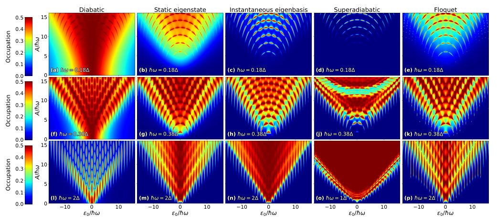
<figcaption class="paper-figure-caption"><b>Fig 3.</b> FIG. 3. Comparison of the interferograms (the time-averaged upper-level qubit occupation probability as a function of the energy detuning ε0 and the driving amplitude A) for different driving frequencies ℏω = 0.18 ∆, 0.38 ∆, 2 ∆(the three rows) in different bases (the five columns), with moderate relaxation and decoherence rates Γ1 = 0.03∆/ℏ, Γ2 = 0.035∆/ℏ. We note a lower value of the driving frequency in panel (o), ℏω = ∆, compared to other panels in the third row. The reason is that the superadiabatic basis is inapplicable in the nonadiabatic regime. The first column: (a,f,l) the interferograms in the diabatic basis (6), which show the cleanest results in the case of fast nonadiabatic...</figcaption>
</figure>
<figure class="paper-figure-card">

<figcaption class="paper-figure-caption"><b>Fig 4.</b> FIG. 4. Dynamics for two driven qubits in different bases with relaxation and decoherence taken into account. The ab- scissa axes show time in units of the driving period T = 2π/ω. The driving frequency is resonant with the two eigenstates at t = 0: ℏω = E3(0) −E2(0). (a) Dynamics in the instanta- neous basis. The initial condition is as follows: ρ22(0) = 1, with other matrix elements being equal to zero. (b) Dy- namics in the diabatic basis. The initial condition is as fol- lows: ρ(d) 22 (0) = 1, with other matrix elements being equal to zero. Both panels show Rabi-like oscillations. The driv- ing period and the Rabi period are the same for both panels, and the Rabi period is shown by the...</figcaption>
</figure>
</div>

<p><strong>Summary.</strong> This paper provides a comprehensive review of applying the GKSL master equation to driven-dissipative quantum systems. It argues that the choice of basis—such as diabatic versus instantaneous eigenbasis—is critical because it dictates the correct form of dissipation operators. The work analyzes how different bases must be used for qubits and qudits to accurately model complex, time-varying quantum dynamics.</p>
<p><strong>Why it may be interesting.</strong> This work is highly relevant as it addresses a foundational methodological challenge in open quantum systems theory: ensuring that theoretical descriptions remain physically consistent regardless of the mathematical basis chosen for computation.</p>
<details>
<summary>Detailed structure</summary>
<p><strong>Main problem.</strong> The core problem is determining the correct mathematical framework for describing open quantum systems, specifically by choosing the appropriate basis when applying the Gorini-Kossakowski-Sudarshan-Lindblad (GKSL) master equation.</p>
<p><strong>Main result.</strong> The choice of basis (e.g., diabatic vs. instantaneous eigenbasis) fundamentally dictates the correct form of the collapse operators and thus the resulting quantum dynamics for driven-dissipative systems.</p>
<p><strong>Method.</strong> The authors analyze the GKSL equation by transforming it into different bases—including diabatic, instantaneous eigenstate, superadiabatic, and Floquet bases—and comparing the resultant equations.</p>
<p><strong>Model / system.</strong> The study focuses on driven-dissipative two- and multilevel quantum systems, exemplified by a qubit (and generalized to qudits) subjected to time-dependent Hamiltonians and dissipation channels.</p>
<p><strong>Key observables.</strong> System density matrix ($
ho$), energy eigenvalues ($E_{\pm}(t)$), and the dynamics governed by the master equation coefficients.</p>
<p><strong>Important parameters / regimes.</strong> Driving parameters like detuning ($\Delta, \epsilon(t)$), dissipation rates ($\Gamma_1, \Gamma_\phi$), and adiabaticity parameters ($\delta$).</p>
<p><strong>Assumptions / limitations.</strong> The derivation relies on fundamental constraints for master equations (Markovianity, complete positivity) and utilizes approximations such as the Born-Markov approximation or adiabatic expansions.</p>
<p><strong>Figures summary.</strong> Figure 1 illustrates energy level diagrams in various bases (diabatic, instantaneous, etc.) as a function of detuning; Table I summarizes the basis choice importance.</p>
<p><strong>Paper structure.</strong> The paper systematically reviews the derivation constraints for the GKSL equation, applies this formalism to time-dependent Hamiltonians, and details how different unitary transformations are required to correctly map dissipation operators into various physical bases.</p>
</details>
<details>
<summary>Abstract</summary>
<p>An open quantum system can be described by a master equation, of which one of the most popular is the Gorini-Kossakowski-Sudarshan-Lindblad (GKSL) equation. We revisit description of driven-dissipative quantum systems focusing on the appropriate choice of the system's basis and the respective transformations. We consider the GKSL equation in different bases and calculate the dynamics for a qubit and for a qudit. An appropriate choice of the basis is a fundamental problem for theoretical consideration of open quantum systems and provides an opportunity to obtain the desired evolution in practice.</p>
</details>
<p><sub><a href="#top">↑ back to top</a></sub></p>

<p><a id="paper-2607.04659"></a></p>
<h3 id="krylov-complexity-mode-resolved-complexity-and-entanglement-entropy-across-phase-transitions-in-the-non-hermitian-extended-su-schrieffer-heeger-model"><a href="http://arxiv.org/abs/2607.04659v1">Krylov complexity, mode-resolved complexity and entanglement entropy across phase transitions in the non-Hermitian extended Su-Schrieffer-Heeger model</a></h3>
<p><strong>Authors:</strong> Ling-Feng Zhang, Wing Chi Yu<br>
<strong>Type:</strong> theory · <strong>Category:</strong> statistical mechanics · <strong>PDF:</strong> <a href="https://arxiv.org/pdf/2607.04659v1">https://arxiv.org/pdf/2607.04659v1</a><br>
<strong>Analysis basis:</strong> full PDF text, analyzed in chunks
<strong>Topic relevance:</strong> 🔥 <code>driven-dissipative phase transition</code> <strong>4/5</strong> · 🔥 <code>entanglement &amp; information structure</code> <strong>4/5</strong> · <code>analog quantum simulation</code> <strong>3/5</strong> · <code>methods for driven-dissipative</code> <strong>3/5</strong> · <code>non-equilibrium universality</code> <strong>3/5</strong> · <code>correlated / nonlocal dissipation</code> <strong>2/5</strong> · <code>non-equilibrium dynamics</code> <strong>2/5</strong> · <code>Keldysh / 2PI / non-Gaussian methods</code> <strong>1/5</strong> · <code>Kondo &amp; dissipative impurity</code> <strong>1/5</strong> · <code>scars &amp; prethermalization</code> <strong>1/5</strong></p>
<div class="figure-strip-hint">↔ Scroll figures horizontally</div>
<div class="paper-figures-scroll">
<figure class="paper-figure-card">
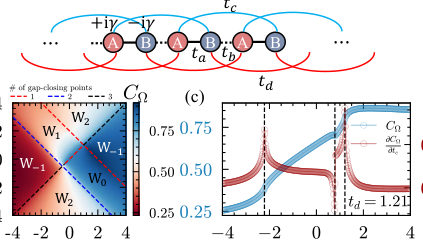
<figcaption class="paper-figure-caption"><b>Fig 1.</b> FIG. 1. (a) Schematic diagram of the extended SSH chain with the unit cell constructed by site A and site B. The intra-cell (inter-cell) hopping ta (tb) is denoted by the black solid (dashed) line. The blue and red curves denote the next- nearest-neighbor hopping terms tc and td, respectively. The red (blue) circles denote sites with opposite on-site imaginary potential ±iγ. (b) The spread complexity of the Hermitian extended SSH model on the tc-td plane with ta = tb = −1. Wn denotes the phase characterized by a winding number of n. The red, blue and black dashed lines are the topological phase transition boundaries and the colors indicate the num- ber of gap-closing points. (c) The spread...</figcaption>
</figure>
<figure class="paper-figure-card">

<figcaption class="paper-figure-caption"><b>Fig 2.</b> FIG. 2. Distribution of exceptional points in the tc-td plane for (a) weak (γ = 0.12) and (c) moderate (γ = 1.2) non- Hermiticity. The markers lie at the phase transition bound- aries of the Hermitian extended SSH model (γ = 0). The numbers adjacent to these markers denote the number of gap- closing points in momentum space. Panels (b) and (d) dis- play the real (blue curves) and imaginary (red curves) parts of the energy spectra in momentum space, corresponding to the parameters indicated by markers in panels (a) and (c), respectively. The gray dotted line represents the zero-energy reference level (E = 0). The insets in the bottom two panels of the middle column in (b) show a zoom-in of...</figcaption>
</figure>
<figure class="paper-figure-card">
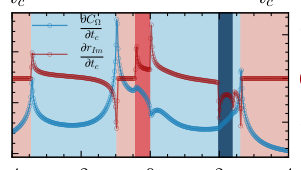
<figcaption class="paper-figure-caption"><b>Fig 3.</b> FIG. 3. (a) The spread complexity of the non-Hermitian ex- tended SSH model with an imaginary staggered chemical po- tential γ = 1.2 on the tc-td plane. (b) The ratio of imaginary eigenvalues over the whole spectrum. (c) The derivative of spread complexity (the ratio of imaginary eigenvalues) over tc is denoted by the blue (red) line with circles, along the line td = 1.21. The background denotes the number of exceptional points [see Fig. 2(c)].</figcaption>
</figure>
<figure class="paper-figure-card">
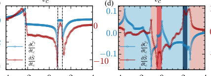
<figcaption class="paper-figure-caption"><b>Fig 4.</b> FIG. 4. (a),(b) The long-time spread complexity on tc-td plane for the Hermitian and non-Hermitian extended SSH model with γ = 1.2, respectively. (c),(d) The derivative of long-time complexity and half-chain entanglement entropy with respect to tc for the Hermitian and non-Hermitian ex- tended SSH model along the line td = 1.21, respectively. The background denotes the number of exceptional points.</figcaption>
</figure>
<figure class="paper-figure-card">

<figcaption class="paper-figure-caption"><b>Fig 5.</b> FIG. 5. The top, middle, and bottom panels display the momentum-space distributions of CΩ, ¯C and 1 −¯C for td = 1.21, respectively. The yellow dashed lines in (a1) indicate the gap-closing points, and in (b1, c1, d1) indicate the parameters in which nEP changes. In the first column, the blue (red) dashed lines denote the boundaries where CΩ≈¯C (CΩ≈1 −¯C). In the second (third) column, CΩ≈¯C (CΩ≈1 −¯C).</figcaption>
</figure>
</div>

<p><strong>Summary.</strong> The paper analyzes phase transitions in the non-Hermitian extended SSH model using advanced quantum information measures like spread complexity and entanglement entropy. These diagnostics successfully signal topological and dynamical phase changes, even when considering complex spectra. The findings establish these metrics as robust, experimentally accessible probes for understanding non-Hermitian physics.</p>
<p><strong>Why it may be interesting.</strong> This work directly applies advanced quantum information tools (complexity, entanglement) to non-Hermitian topological models, providing a powerful diagnostic framework for characterizing complex many-body dynamics beyond standard spectral methods. This is highly relevant for open quantum systems research.</p>
<details>
<summary>Detailed structure</summary>
<p><strong>Main problem.</strong> The study investigates how quantum information measures can characterize phase transitions occurring within non-Hermitian extended Su-Schrieffer-Heeger (SSH) models.</p>
<p><strong>Main result.</strong> Both spread complexity and entanglement entropy effectively signal the presence of phase transitions, with mode-resolved complexity providing detailed insight into the characteristic modes driving these changes.</p>
<p><strong>Method.</strong> The authors employ quantum information diagnostics, including Krylov/spread complexity and entanglement entropy, applied to two dynamical protocols: ground state preparation and long-time evolution under non-Hermitian dynamics.</p>
<p><strong>Model / system.</strong> The system is an extended SSH model incorporating next-nearest-neighbor hoppings and an imaginary staggered chemical potential. The Hamiltonian exhibits PT-symmetry and is analyzed in the presence of small non-Hermiticity, leading to exceptional points near topological boundaries.</p>
<p><strong>Key observables.</strong> Krylov/Spread complexity ($C$), Mode-resolved complexity, Entanglement entropy ($S$), Saturation times ($  ilde{t}_{EE}^{\epsilon}$), and Exceptional Points (EPs).</p>
<p><strong>Important parameters / regimes.</strong> Non-Hermiticity strength ($\gamma$), Topological phase boundaries, and the driving parameter controlling the transition.</p>
<p><strong>Assumptions / limitations.</strong> The analysis relies on mapping complex dynamics onto measurable quantities like complexity and entanglement entropy to detect underlying topological or dynamical phase changes.</p>
<p><strong>Figures summary.</strong> Figures illustrate schematic models of the SSH chain, plot spread complexity vs. parameters showing topological boundaries for the Hermitian case, and show distributions of exceptional points in parameter space when non-Hermiticity is introduced.</p>
<p><strong>Paper structure.</strong> The paper systematically introduces the non-Hermitian extended SSH model, details the application of complexity measures (Krylov/Spread) and entanglement entropy across two distinct dynamical protocols, analyzes how these diagnostics signal phase transitions near exceptional points, and finally uses mode-resolved analysis to characterize persistent dynamical phases.</p>
</details>
<details>
<summary>Abstract</summary>
<p>We investigate phase transitions in the extended Su-Schrieffer-Heeger (SSH) model with next-nearest-neighbor hoppings and an imaginary staggered chemical potential. In the presence of small non-Hermiticity, exceptional points emerge in pairs from the gap-closing momenta near the topological phase boundaries of the Hermitian limit. Utilizing the Krylov spread complexity and entanglement entropy, we analyze two dynamical protocols: (i) preparing the non-Hermitian ground state via a unitary transformation, and (ii) evolving the system under the non-Hermitian Hamiltonian. We show that the spread complexity, and long-time spread complexity as well as entanglement entropy can effectively signal phase transitions in the first and second protocols, respectively. To unravel the detailed structure of the transitions, we introduce the momentum-resolved complexity that identifies the characteristic modes and tracks their evolution with the driving parameter. In the regime where the system possesses a purely imaginary spectrum, we further identify dynamical phases based on the saturation behavior of the spread complexity. The entanglement entropy is also found to exhibit similar saturation behavior, thereby providing a more experimentally accessible probe of the dynamical phases.</p>
</details>
<p><sub><a href="#top">↑ back to top</a></sub></p>

<p><a id="paper-2607.04175"></a></p>
<h3 id="realizing-next-nearest-neighbor-coupling-and-peierls-phase-in-circuits"><a href="http://arxiv.org/abs/2607.04175v1">Realizing Next-Nearest-Neighbor Coupling and Peierls Phase in Circuits</a></h3>
<p><strong>Authors:</strong> Xin-Sheng Zhang, Wen-Jie Xu, Hang-Yu Gu, Chuan-Xun Du, Yong-Long Wang<br>
<strong>Type:</strong> both · <strong>Category:</strong> other · <strong>PDF:</strong> <a href="https://arxiv.org/pdf/2607.04175v1">https://arxiv.org/pdf/2607.04175v1</a><br>
<strong>Analysis basis:</strong> full PDF text, analyzed in chunks
<strong>Topic relevance:</strong> 🔥 <code>analog quantum simulation</code> <strong>4/5</strong> · <code>driven-dissipative phase transition</code> <strong>3/5</strong> · <code>methods for driven-dissipative</code> <strong>3/5</strong> · <code>non-equilibrium dynamics</code> <strong>3/5</strong> · <code>QC/QI experiment</code> <strong>2/5</strong> · <code>non-equilibrium universality</code> <strong>2/5</strong> · <code>Frenkel-Kontorova</code> <strong>1/5</strong> · <code>Keldysh / 2PI / non-Gaussian methods</code> <strong>1/5</strong> · <code>Kondo &amp; dissipative impurity</code> <strong>1/5</strong> · <code>correlated / nonlocal dissipation</code> <strong>1/5</strong> · <code>correlated cavity matter</code> <strong>1/5</strong> · <code>entanglement &amp; information structure</code> <strong>1/5</strong> · <code>exotic spin models in light-matter</code> <strong>1/5</strong></p>
<div class="figure-strip-hint">↔ Scroll figures horizontally</div>
<div class="paper-figures-scroll">
<figure class="paper-figure-card">
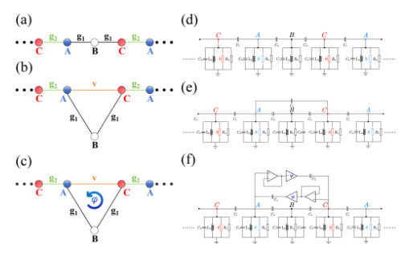
<figcaption class="paper-figure-caption"><b>Fig 1.</b> FIG. 1. Theoretical models and circuit implementations of the non-Hermitian one-dimensional trimerized circuits. (a) Initially trimerized SSH model with NN couplings g1 and g2. (b) Enhanced trimerized SSH model with an additional NNN coupling ν. (c) Reenhanced trimerized SSH model with an NNN coupling ν and a Peierls phase φ. (d)–(f) Circuit im- plementations corresponding to panels (a)–(c), respectively.</figcaption>
</figure>
<figure class="paper-figure-card">
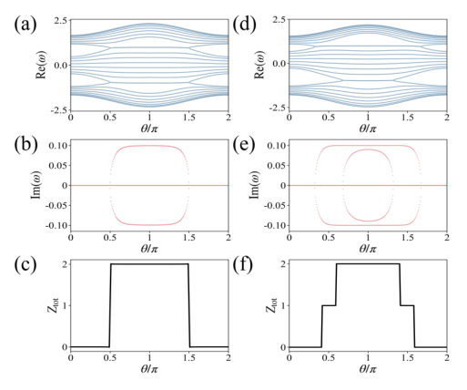
<figcaption class="paper-figure-caption"><b>Fig 2.</b> FIG. 2. Eigenfrequency spectra and total Zak phase for the initial and NNN-coupled models showing the transition from a two-sector response to a stepwise topological sequence. (a) The real parts of the eigenfrequency spectra for ν = 0 and φ = 0; (b) The imaginary parts for ν = 0 and φ = 0; (c) The total Zak phase ztot of ν = 0 and φ = 0; (d) The real parts for ν = 0.2 and φ = 0; (e) The imaginary parts for ν = 0.2 and φ = 0; and (f) The total Zak phase ztot of ν = 0.2 and φ = 0.</figcaption>
</figure>
<figure class="paper-figure-card">

<figcaption class="paper-figure-caption"><b>Fig 3.</b> FIG. 3. Real-part eigenfrequency spectra and corresponding eigenstate distributions at representative parameters used to identify the boundary-localized sectors. (a)–(c) Real parts of the eigenfrequency spectra for θ = 0.3π, ν = 0; θ = π, ν = 0; and θ = 0.5π, ν = 0.2, φ = 0, respectively. (d), (e) Spatial distributions of the eigenstates associated with the red isolated eigenvalues in panel (b). (f) Spatial distribution of the eigenstate associated with the red isolated eigenvalue in panel (c). Black dots denote bulk-state branches, and red dots denote isolated edge states separated from the bulk bands.</figcaption>
</figure>
<figure class="paper-figure-card">
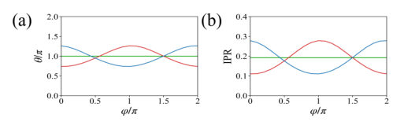
<figcaption class="paper-figure-caption"><b>Fig 4.</b> FIG. 4. Peierls-phase-driven reconstruction of topological phase regions and edge-state localization. (a) The upper- and lower-edge-state stability-region widths ∆θ± versus the Peierls phase φ. (b) The inverse participation ratios IPRs± of the upper and lower edge states versus φ. In both panels, blue and red curves denote the upper and lower edge states, respectively, and the green horizontal line denotes the refer- ence result for ν = 0. The parameters are γ = 0.2 and ν = 0.2.</figcaption>
</figure>
<figure class="paper-figure-card">
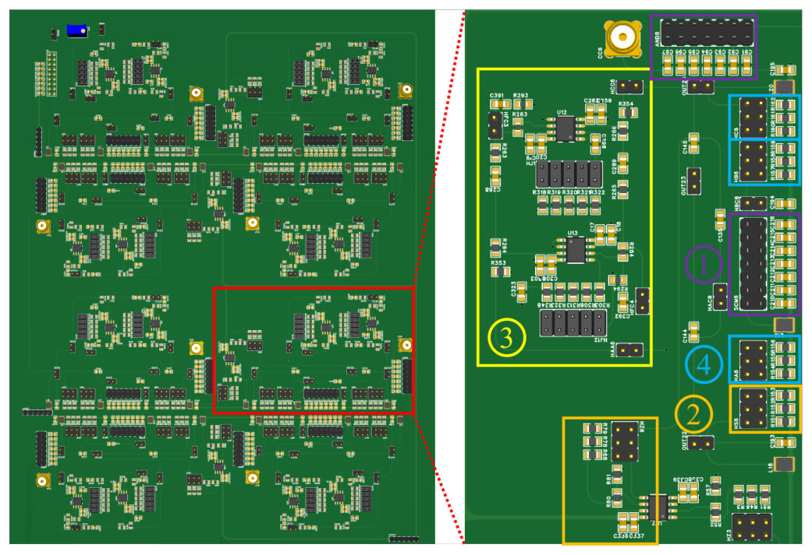
<figcaption class="paper-figure-caption"><b>Fig 5.</b> FIG. 5. PCB layout of the non-Hermitian topological circuit and enlarged PCB layout of a single unit cell. The numbered labels indicate the main circuit components: (1) tunable coupling capacitor array, consisting of six 200 pF capacitors and one 500 pF capacitor; (2) gain/loss module, including one dual operational amplifier ADA4891-2, two 10 kΩcurrent-limiting resistors, a tunable negative-resistance module, and 100 nF and 10 µF decoupling capacitors; (3) Peierls-phase circuit module; and (4) tunable resistor R0 module.</figcaption>
</figure>
</div>

<p><strong>Summary.</strong> This work develops and experimentally verifies a trimerized RLC circuit capable of realizing non-Hermitian SSH models extended with NNN coupling and a tunable Peierls phase. By controlling this synthetic gauge field ($\varphi$), the researchers can programmatically manipulate the topological properties, such as the localization strength and spectral gaps, of edge states in a solid-state platform.</p>
<p><strong>Why it may be interesting.</strong> The use of engineered superconducting circuits (RLC) to realize complex topological Hamiltonians, particularly those involving synthetic gauge fields like the Peierls phase, provides an accessible platform for studying advanced condensed matter concepts relevant to quantum simulation.</p>
<details>
<summary>Detailed structure</summary>
<p><strong>Main problem.</strong> The research aims to realize and investigate topological physical states by engineering Next-Nearest-Neighbor (NNN) coupling and the Peierls phase within superconducting/circuit models.</p>
<p><strong>Main result.</strong> The study demonstrates that the Peierls phase acts as a synthetic gauge field, allowing for programmable control over the widths and localization strengths of topologically distinct edge state response bands in the circuit.</p>
<p><strong>Method.</strong> The authors combine theoretical analysis using the circuit Laplacian (analogous to a Hamiltonian) with numerical simulations and physical measurements on fabricated RLC circuits.</p>
<p><strong>Model / system.</strong> The system is a non-Hermitian one-dimensional Su-Schrieffer-Heeger (SSH) model implemented in a trimerized superconducting/RLC circuit. The model is systematically enhanced by adding NNN coupling ($
u$) and the Peierls phase ($\varphi$).</p>
<p><strong>Key observables.</strong> Total Zak phase ($z_{	ext{tot}}$), edge state response intervals ($\Delta	heta_{\pm}$), Inverse Participation Ratios (IPRs), and measured steady-state voltages showing spatial decay.</p>
<p><strong>Important parameters / regimes.</strong> Nearest-neighbor couplings ($g_1, g_2$), NNN coupling ($
u$), and the tunable Peierls phase ($\varphi$).</p>
<p><strong>Assumptions / limitations.</strong> The analysis relies on mapping the circuit Laplacian to an effective Hamiltonian and making approximations near edge-state resonances for analytical derivation.</p>
<p><strong>Figures summary.</strong> Figures illustrate theoretical models, eigenfrequency spectra showing topological transitions, and experimental voltage profiles demonstrating how the Peierls phase controls boundary localization.</p>
<p><strong>Paper structure.</strong> The paper progresses from establishing the basic SSH model (NN coupling) to enhancing it with NNN terms ($
u$), and finally introducing the Peierls phase ($\varphi$) as a control mechanism. The structure moves from theoretical derivation of edge-state frequencies to numerical verification, culminating in experimental measurements on a PCB.</p>
</details>
<details>
<summary>Abstract</summary>
<p>We really design the trimerized circuits for the non-Hermitian one-dimensional Su-Schrieffer-Heeger models. There are three models, the initial one just considers the nearest neighbor coupling, the enhanced one is extended to contain the next-nearest-neighbor coupling, and the final one is reenhanced by introducing the Peierls phase. We investigate the dynamics of the circuit Laplacians with respect to the models, find that the topological states appear in the initial model and the response intervals are substantially affected by the next-nearest-neighbor coupling channels and the Peierls phase. These results are practically demonstrated by numerical simulations and experimental measurements. As a conclusion, the trimerized circuits can provide an adjustable and simple platform to investigate new topological physical states.</p>
</details>
<p><sub><a href="#top">↑ back to top</a></sub></p>

<p><a id="paper-2607.04080"></a></p>
<h3 id="coherent-quantum-control-of-dark-excitons-in-hybrid-metal-organic-chalchogenolates"><a href="http://arxiv.org/abs/2607.04080v1">Coherent quantum control of dark excitons in hybrid metal organic chalchogenolates</a></h3>
<p><strong>Authors:</strong> Christian L. McCoy, Tobias Saule, Mariya Aleksich, Maggie C. Willson, J. Nathan Hohman, Thomas Weinacht, George N. Gibson, Carlos A. Trallero-Herrero<br>
<strong>Type:</strong> both · <strong>Category:</strong> quantum information and computing · <strong>PDF:</strong> <a href="https://arxiv.org/pdf/2607.04080v1">https://arxiv.org/pdf/2607.04080v1</a><br>
<strong>Analysis basis:</strong> full PDF text, analyzed in chunks
<strong>Topic relevance:</strong> 🔥 <code>QC/QI experiment</code> <strong>4/5</strong> · <code>interference shaping light</code> <strong>3/5</strong> · <code>quantum optics experiment</code> <strong>3/5</strong> · <code>analog quantum simulation</code> <strong>2/5</strong> · <code>driven-dissipative phase transition</code> <strong>2/5</strong> · <code>non-equilibrium dynamics</code> <strong>2/5</strong> · <code>correlated / nonlocal dissipation</code> <strong>1/5</strong> · <code>correlated cavity matter</code> <strong>1/5</strong> · <code>entanglement &amp; information structure</code> <strong>1/5</strong> · <code>methods for driven-dissipative</code> <strong>1/5</strong> · <code>non-equilibrium universality</code> <strong>1/5</strong> · <code>quantum measurements</code> <strong>1/5</strong> · <code>spintronics-quantum-optics interface</code> <strong>1/5</strong></p>
<div class="figure-strip-hint">↔ Scroll figures horizontally</div>
<div class="paper-figures-scroll">
<figure class="paper-figure-card">

<figcaption class="paper-figure-caption"><b>Fig 1.</b> Fig. 1: (a.) Excitonic state representation of mithrene, single photon allowed transi- tions in blue (left). Two photon allowed transitions in red (right). (b.) State diagram of a χ(3) process. Formalism and nomenclature from Eq. 1 and Ref. [25]. In the case of mithrene the only real n-states are the dark exciton states, A2p and B2p.</figcaption>
</figure>
<figure class="paper-figure-card">
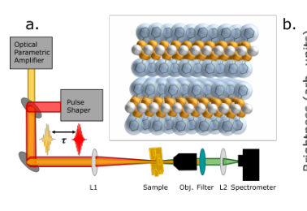
<figcaption class="paper-figure-caption"><b>Fig 2.</b> Fig. 2: (a.) General experimental apparatus design used for all experiments. Pump pulses are are from a Ti:Sapphire laser and split between an OPA and pulse shaper. The resulting pulses are recombined and focused onto a sample of mithrene before the resulting emission is collected. Inset. Cartoon crystal structure of mithrene. Silver ball - Ag, Orange ball - Se, Blue hexagon/ball - phenyl ring (C6H5) (b.) Comparison of the FWM (black) brightness response in mithrene to the SFG (orange) brightness in BBO, both as a function of optical path length delay.</figcaption>
</figure>
<figure class="paper-figure-card">

<figcaption class="paper-figure-caption"><b>Fig 3.</b> Fig. 3: (a.) Two-dimensional heat map of the FWM emission as a function of the π phase jump position. Constructive interference as a result of the B2p resonance can be seen at ∼1.575 eV. (b.) Illustration of the phase delay scanning through the pump spectrum, leading to constructive interference for the entire width of the B2p resonance. (c.) B2p state population resulting from second-order perturbative treatment of the Hamiltonian, Eq. 2, overlayed over the heat map from (a.). (d.) Best theoretical agreement from a multidimensional scan of the integrated TDSE using the Hamiltonian from Eq. 2 compared to the heat map from (a.). Extracted material properties that fit the best for I0 = 2.88 ·...</figcaption>
</figure>
<figure class="paper-figure-card">

<figcaption class="paper-figure-caption"><b>Fig 4.</b> Fig. 4: (a.) λcenter = 1.56 eV (b.). λcenter = 1.53 eV. (c.) Lineout of the emission centered at 2.19 eV.</figcaption>
</figure>
<figure class="paper-figure-card">
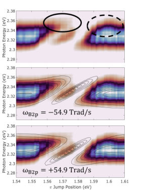
<figcaption class="paper-figure-caption"><b>Fig 5.</b> Fig. 5: (a) Zoom in of the histogram for all simulated RMS values. (b) experimental π jump data. Solid and dashed circle mark regions of interest, see text. (c)(d) Simulation result for an ωB2p of -54.9 Trad/s (RMS of 0.092) and +54.9 Trad/s (RMS of 0.102) overlayed with the experimental data respectively. The rest of the material properties is kept constant.</figcaption>
</figure>
</div>

<p><strong>Summary.</strong> The paper reports on achieving coherent quantum control over dark exciton states within metal-organic chalcogenolates using ultrafast laser pulse shaping. By modeling the system with a three-level Hamiltonian and employing Four-Wave Mixing, the authors demonstrate that precise spectral phase control allows for deterministic manipulation of these otherwise inaccessible quantum states. This work establishes a pathway toward utilizing solid-state excitons as functional qubits for quantum information processing.</p>
<p><strong>Why it may be interesting.</strong> This work directly bridges solid-state materials science with fundamental quantum optics principles. The use of dark excitons as artificial qubits, controlled by tailored light fields, is a prime example of coherent control in condensed matter systems relevant to quantum computing architectures.</p>
<details>
<summary>Detailed structure</summary>
<p><strong>Main problem.</strong> The primary goal is demonstrating coherent quantum control over dark exciton states, which are promising artificial atom-like systems for next-generation quantum processing.</p>
<p><strong>Main result.</strong> The authors successfully demonstrated theoretical access and experimental proof-of-concept for controlling these dark excitons using tailored ultrafast laser pulses to execute fundamental quantum gate operations.</p>
<p><strong>Method.</strong> The work combines advanced ultrafast spectroscopy (Four-Wave Mixing) with sophisticated pulse shaping techniques to manipulate the system's Hamiltonian dynamics.</p>
<p><strong>Model / system.</strong> The physical platform is Metal-Organic Chalcogenolates (MOChas), specifically mithrene, hosting dark exciton states ($A_{2p}, B_{2p}$). The system is modeled using a non-perturbative, three-level Hamiltonian incorporating time-varying Stark shifts and coupling strengths.</p>
<p><strong>Key observables.</strong> FWM emission energy, constructive interference at resonance, and the ability to map pulse area ($  heta$) to unitary gate operations ($U(   heta)$).</p>
<p><strong>Important parameters / regimes.</strong> Ultrafast pulse shaping (spectral phase $\phi(\lambda)$), two-photon absorption resonances (e.g., 816 nm, 787 nm), and the required pulse area for specific rotations ($\pi/2$ rotation requires $  heta = \pi/2$).</p>
<p><strong>Assumptions / limitations.</strong> The analysis moves beyond perturbative limits to strong field excitation regimes; material constants are largely unknown, necessitating multiple fitting simulations.</p>
<p><strong>Figures summary.</strong> Figures illustrate the experimental setup using FWM with a pulse shaper, showing resonance enhancement via $\pi$-phase flips and comparing theoretical predictions (TDSE) against measured spectral responses away from resonance.</p>
<p><strong>Paper structure.</strong> The paper progresses from establishing the physical system and Hamiltonian to detailing the measurement techniques (FWM/pulse shaping), demonstrating control through simulation and experiment, and finally deriving the mathematical framework for implementing quantum gates using pulse area concepts.</p>
</details>
<details>
<summary>Abstract</summary>
<p>Artificial atom-like systems are a promising candidate for next generation quantum processing. Among them, dark excitons exhibit one of the longest lifetimes at high temperatures. Here, we demonstrate coherent control of dark excitonic states in metal-organic chalcogenolates (MOChas) by using an ultrafast pulse shaper at room temperature. These dark exciton states are optically accessed via two-photon absorption and directly read out with a four-wave mixing process. The system is described by a non-perturbative, two-photon Hamiltonian based on well-known atomic physics and applied to a three level system comprised of two dark excitons. Empirical and theoretical state specific optical access is shown via a simple optical pulse shape. The developed Hamiltonian-based description is a first step towards a quantum processing platform using three-level systems and two photon transitions, one example being dark excitons in the MOCha silver benzeneselenolate (mithrene). Simple conditions for gate operations are laid out and described.</p>
</details>
<p><sub><a href="#top">↑ back to top</a></sub></p>

<p><a id="paper-2607.04268"></a></p>
<h3 id="entanglement-of-excited-states-after-measurements-in-conformal-field-theory"><a href="http://arxiv.org/abs/2607.04268v1">Entanglement of excited states after measurements in conformal field theory</a></h3>
<p><strong>Authors:</strong> Hui-Huang Chen<br>
<strong>Type:</strong> theory · <strong>Category:</strong> statistical mechanics · <strong>PDF:</strong> <a href="https://arxiv.org/pdf/2607.04268v1">https://arxiv.org/pdf/2607.04268v1</a><br>
<strong>Analysis basis:</strong> full PDF text, analyzed in chunks
<strong>Topic relevance:</strong> 🔥 <code>entanglement &amp; information structure</code> <strong>4/5</strong> · 🔥 <code>measurement-induced transitions</code> <strong>4/5</strong> · <code>non-equilibrium dynamics</code> <strong>3/5</strong> · <code>quantum measurements</code> <strong>3/5</strong> · <code>analog quantum simulation</code> <strong>2/5</strong> · <code>non-equilibrium universality</code> <strong>2/5</strong> · <code>Keldysh / 2PI / non-Gaussian methods</code> <strong>1/5</strong> · <code>correlated / nonlocal dissipation</code> <strong>1/5</strong> · <code>driven-dissipative phase transition</code> <strong>1/5</strong> · <code>interference shaping light</code> <strong>1/5</strong> · <code>methods for driven-dissipative</code> <strong>1/5</strong></p>
<div class="figure-strip-hint">↔ Scroll figures horizontally</div>
<div class="paper-figures-scroll">
<figure class="paper-figure-card">
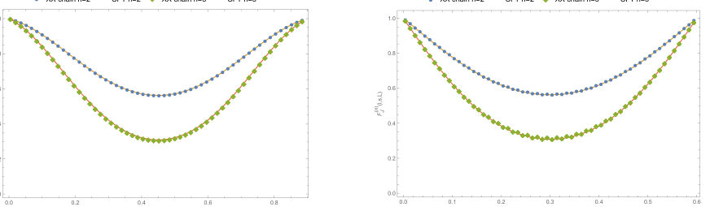
<figcaption class="paper-figure-caption"><b>Fig 1.</b> Figure 1: Numerical check of the post-measurement current-excitation ratios in the XX chain. The system size is L = 500. The measured interval has length (a) s = 50, corresponding to s/L = 0.1, and (b) s = 200, corresponding to s/L = 0.4. The horizontal axis is x = l/L. Symbols denote lattice results obtained from the conditional free-fermion correlation matrix after projecting the measured sites onto a fixed alternating occupation pattern. Solid curves are the CFT predictions for F (2) J (cf. Eq. (4.21)) and F (3) J (cf. Eq. (4.27)). The agreements in both panels support the current hafnian formulas on the post-measurement slit geometry.</figcaption>
</figure>
<figure class="paper-figure-card">

<figcaption class="paper-figure-caption"><b>Fig 2.</b> Figure 2: Numerical check of the post-measurement second R´enyi ratio for the J/ ¯J superposition state. Symbols denote XX-chain results obtained from the multi-Slater determinant calculation after projecting the measured sites onto a fixed alternating occupation pattern. Solid curves are the CFT predictions from the disk four-current formula. The left panel tests the dependence on the subsystem size x = l/L, while the right panel tests the relative phase dependence. The agreement in both panels verifies the coherent left-right interference terms induced by the measurement boundary.</figcaption>
</figure>
<figure class="paper-figure-card">

<figcaption class="paper-figure-caption"><b>Fig 3.</b> Figure 3: Numerical check of the conjugate-vertex superposition. The blue points are the XX- chain results, and the orange curves are the CFT predictions. In the phase scan, the CFT curve is evaluated using the branch-matched phase θCFT = θlat −πl/L + πs/(4L). The agreement shows that the CFT expression captures both the spatial dependence and the phase-sensitive interference structure of the vertex superposition. The small residual deviations are attributed to finite-size corrections.</figcaption>
</figure>
</div>

<p><strong>Summary.</strong> This paper develops a rigorous CFT framework to calculate the entanglement entropy of excited states immediately following a projective measurement on a spatial interval. By mapping complex geometries to simpler domains, the authors derive general formulas for this post-measurement entanglement, testing them specifically in the free compact boson model and numerically on the XX chain.</p>
<p><strong>Why it may be interesting.</strong> The methodology of calculating entanglement after measurement is crucial for understanding quantum quenches and open system dynamics in 1D critical systems. The explicit connection between CFT correlation functions and measurable entanglement entropy provides powerful theoretical tools applicable to AMO platforms simulating these models.</p>
<details>
<summary>Detailed structure</summary>
<p><strong>Main problem.</strong> The study focuses on calculating the entanglement entropy of low-energy excited states following a fixed-outcome projective measurement within a (1+1)-dimensional Conformal Field Theory (CFT). This extends standard ground-state calculations to include excitation effects.</p>
<p><strong>Main result.</strong> The post-measurement Rényi entropy for an excited state is found to be additive, involving the original ground-state result plus a term derived from a normalized boundary-CFT correlation function. Furthermore, phase-sensitive interference terms appear in finite-slit measurements compared to unmeasured limits.</p>
<p><strong>Method.</strong> The authors employ conformal field theory techniques, mapping complex geometries (like replicated slits) onto simpler domains such as the disk. Calculations involve expressing entanglement measures via specialized correlation functions and utilizing determinant formulas for free fermionic systems.</p>
<p><strong>Model / system.</strong> The primary model is a critical quantum system described by CFT in 1+1 dimensions. Specific applications include the compact free boson CFT (for current excitations) and testing predictions on the critical XX chain using free-fermion methods.</p>
<p><strong>Key observables.</strong> Post-measurement Rényi entropy ($S_n$), excess Rényi entropy, and boundary-CFT correlation functions $F^{(n)}_{\Upsilon,a}$.</p>
<p><strong>Important parameters / regimes.</strong> Slit length ($s$), unmeasured region size ($l$), CFT scaling dimensions ($\Delta_n$), and the measurement outcome represented by a conformal boundary condition ($a$).</p>
<p><strong>Assumptions / limitations.</strong> The analysis assumes that the fixed-outcome projective measurement renormalizes to an effective conformal boundary condition. The free-fermion calculations rely on determinant contraction identities.</p>
<p><strong>Paper structure.</strong> The paper first establishes the general framework for post-measurement entanglement in CFT, relating it to correlation functions. It then specializes this framework to the compact free boson model and analyzes specific excitations (currents, superpositions). Finally, it details numerical testing methods using the critical XX chain via Slater determinants.</p>
</details>
<details>
<summary>Abstract</summary>
<p>We study the entanglement of low-energy excited states after a fixed-outcome projective measurement on a spatial interval in a (1+1)-dimensional conformal field theory (CFT). The post-selected measurement outcome is represented by a slit carrying a conformal boundary condition, while excited states are introduced by operator insertions in the Euclidean path integral. After mapping the replicated slit geometry to a disk, the excited-state contribution to the post-measurement Rényi entropy is expressed as a normalized boundary-CFT correlation function.   We apply this framework to the compact free boson CFT. For the chiral current excitation, the relevant ratios are given by current hafnians. We also study coherent superpositions of $J$ and $\bar J$, and of conjugate compact vertex operators. In the conjugate-vertex case, the ordinary-cylinder second Rényi ratio is independent of the relative phase, whereas the finite-slit post-measurement ratio contains phase-sensitive interference terms. Finally, we describe free-fermion and multi-Slater determinant methods for testing these predictions in the critical XX chain.</p>
</details>
<p><sub><a href="#top">↑ back to top</a></sub></p>

<p><a id="paper-2607.04896"></a></p>
<h3 id="photonic-cluster-state-generation-from-a-quantum-dot-emitting-in-the-telecom-c-band"><a href="http://arxiv.org/abs/2607.04896v1">Photonic Cluster State Generation from a Quantum Dot Emitting in the Telecom C-band</a></h3>
<p><strong>Authors:</strong> Giora Peniakov, Reza Hekmati, Johannes Michl, Mohamed Helal, Moritz Meinecke, Jochen Kaupp, Yorick Reum, Martin Kamp, Monika Emmerling, Andreas Theo Pfenning, Sven Hoefling, Tobias Huber-Loyola<br>
<strong>Type:</strong> experiment · <strong>Category:</strong> quantum information and computing · <strong>PDF:</strong> <a href="https://arxiv.org/pdf/2607.04896v1">https://arxiv.org/pdf/2607.04896v1</a><br>
<strong>Analysis basis:</strong> full PDF text, analyzed in chunks
<strong>Topic relevance:</strong> 🔥 <code>QC/QI experiment</code> <strong>4/5</strong> · 🔥 <code>spintronics-quantum-optics interface</code> <strong>4/5</strong> · <code>exotic spin models in light-matter</code> <strong>3/5</strong> · <code>quantum optics experiment</code> <strong>3/5</strong> · <code>entanglement &amp; information structure</code> <strong>2/5</strong> · <code>quantum measurements</code> <strong>2/5</strong> · <code>Tavis-Cummings &amp; cavity-many-emitter</code> <strong>1/5</strong> · <code>analog quantum simulation</code> <strong>1/5</strong> · <code>correlated cavity matter</code> <strong>1/5</strong> · <code>non-equilibrium dynamics</code> <strong>1/5</strong></p>
<div class="figure-strip-hint">↔ Scroll figures horizontally</div>
<div class="paper-figures-scroll">
<figure class="paper-figure-card">
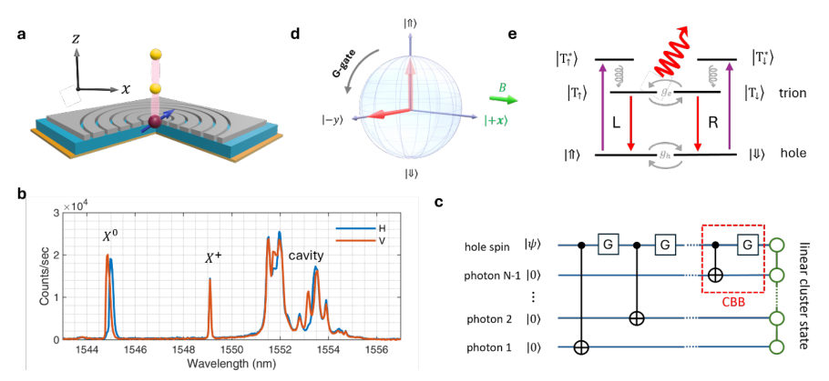
<figcaption class="paper-figure-caption"><b>Fig 1.</b> Fig. 1. a Circular-Bragg grating microcavity. b Polarization resolved photoluminescence under above-band excitation. 𝑋0 is the neutral exciton and 𝑋+ is the positive trion recombination transition. The broad emission feature around 1552 nm comes from other transitions feeding into the cavity. H(V) stands for horizontal(vertical) linear polarization. c Cluster-state generation circuit consisting of CNOT and 𝐺 gates. Given an input state |𝜓⟩= |−𝑦⟩, a linear cluster state is generated. A red dashed frame marks a single circuit building block (CBB) that we characterize using a quantum process tomography. d Bloch sphere representation of the ground state hole spin illustrating the quarter-...</figcaption>
</figure>
<figure class="paper-figure-card">

<figcaption class="paper-figure-caption"><b>Fig 2.</b> Fig. 2. Experimental characterization of the spin state at the CBB input. a Time resolved emission from the 𝑋+ following excitation with two laser pulses used for spin heralding and readout. b Polarization-resolved time traces from the readout pulse, conditioned on a heralding photon detection emitted during the pink-highlighted post selection time window in panel ‘a’. The plot labels HR, HL, DR and DL indicate the excitation and detection polarizations, respectively. Yellow- and green-highlighted areas mark the 80-ps time windows at 𝑡= 0 and 𝑡= 𝑇𝑒/4 used to probe the spin projections {𝜌𝑥, 𝜌𝑦, 𝜌𝑧}. c A series of spin readouts with variable initialization delay is visualized as vectors on...</figcaption>
</figure>
<figure class="paper-figure-card">
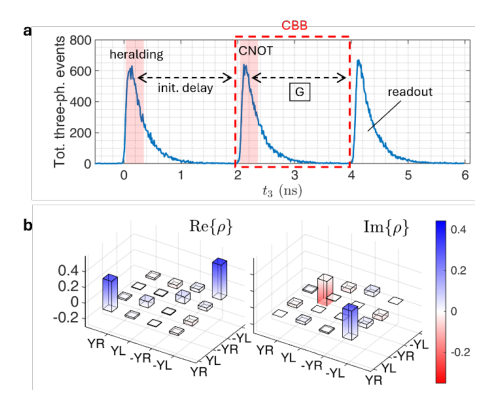
<figcaption class="paper-figure-caption"><b>Fig 3.</b> Fig. 3. CBB output: spin photon tomography. a Emission from the 𝑋+ following three excitation pulses. The red dashed frame indicates the CBB operation consisting of a CNOT pulse followed by a time interval 𝑇𝜋/2 implementing the 𝐺 gate through Larmor precession. Pink-highlighted regions mark the post-selection time windows for photon detection. Spin–photon tomography is obtained by correlating photons from the heralding, CNOT, and readout pulses. b Real and imaginary part of the measured spin–photon density matrix, 𝜌(|−𝑦⟩).</figcaption>
</figure>
<figure class="paper-figure-card">

<figcaption class="paper-figure-caption"><b>Fig 4.</b> Fig. 4. Process map 𝚽. a The 64 measured real elements ϕ𝛼𝛽</figcaption>
</figure>
</div>

<p><strong>Summary.</strong> The research demonstrates deterministic cluster state generation using an indium-arsenide quantum dot operating at the telecom C-band. By characterizing the underlying quantum process map and measuring spin-photon entanglement, the authors confirm the feasibility of creating multi-qubit entangled states necessary for scalable photonic quantum computation.</p>
<p><strong>Why it may be interesting.</strong> This work directly addresses a major engineering bottleneck in quantum networking by achieving high-fidelity photonic entanglement generation at telecom wavelengths using solid-state emitters, which is crucial for scaling up quantum communication networks.</p>
<details>
<summary>Detailed structure</summary>
<p><strong>Main problem.</strong> The primary goal is the deterministic generation of photonic cluster states directly within the telecom C-band (1549 nm) to enable quantum communication compatible with existing fiber infrastructure.</p>
<p><strong>Main result.</strong> The authors successfully demonstrated this process, achieving a measured process map fidelity ($\mathcal{F}$) of $0.71 \pm 0.01$ and generating a state locally equivalent to a three-qubit cluster state (GHZ state).</p>
<p><strong>Method.</strong> Cluster state generation is achieved using a quantum dot system that implements controlled gates via hole spin excitation, followed by full characterization using process tomography.</p>
<p><strong>Model / system.</strong> The platform utilizes an Indium-arsenide ($ ext{InAs}$) quantum dot embedded in a microcavity. The protocol relies on manipulating the hole spin state to mediate entanglement between the spin and emitted photon, following variants of the Lindner–Rudolph protocol.</p>
<p><strong>Key observables.</strong> Process map fidelity ($\mathcal{F} = 0.71 \pm 0.01$), spin–photon polarization entanglement negativity ($\mathcal{N} = 0.27 \pm 0.02$), and photon indistinguishability (at least 83%).</p>
<p><strong>Important parameters / regimes.</strong> Telecom C-band wavelength (1549 nm), hole-spin coherence time ($T_2^* = 15.9 \pm 1.7$ ns), and high repetition rate (80 MHz).</p>
<p><strong>Assumptions / limitations.</strong> The protocol assumes that characterizing a single Circuit Building Block (CBB) is sufficient to characterize $N$ qubits by concatenation, and it relies on spectral detuning compensated by Purcell enhancement.</p>
<p><strong>Figures summary.</strong> Figures illustrate the microcavity setup, pulse sequences for spin state characterization, tomography results showing entanglement quantification ($\mathcal{N}$), and comparisons between measured and ideal process maps ($\Phi$).</p>
<p><strong>Paper structure.</strong> The paper details the physical system and protocol (using hole spins in a QD) to generate cluster states. It then presents rigorous characterization methods—including process map reconstruction, entanglement measurement via tomography, and indistinguishability tests—culminating in the demonstration of a multi-qubit state.</p>
</details>
<details>
<summary>Abstract</summary>
<p>Photonic cluster states are a key resource for photonic quantum information processing. So far, deterministic generation of these states has been limited to the near-infrared wavelength range. To achieve quantum advantage in communication while maintaining compatibility with silicon photonics, operation in the telecom wavelength range is required. In this work, we demonstrate deterministic cluster state generation directly in the telecom C-band. This is achieved through repetitive excitation of a hole spin confined in an indium-arsenide quantum dot subjected to an external magnetic field. We characterize the quantum process that generates the cluster state by measuring its process map, obtaining a fidelity of $\mathrm{F} = 0.71 \pm 0.01$ to the ideal case. As part of this characterization, we observe spin--photon polarization entanglement with a negativity of $\mathrm{N} = 0.27 \pm 0.02$. The emitted photons exhibit indistinguishability of at least 83%, demonstrating the potential for future fusion gates necessary for photonic cluster state generation beyond linear connectivity.</p>
</details>
<p><sub><a href="#top">↑ back to top</a></sub></p>

<p><a id="paper-2607.05303"></a></p>
<h3 id="energetic-protection-monotonicity-and-switching-far-from-equilibrium"><a href="http://arxiv.org/abs/2607.05303v1">Energetic Protection, Monotonicity and Switching Far from Equilibrium</a></h3>
<p><strong>Authors:</strong> Uğur Çetiner<br>
<strong>Type:</strong> theory · <strong>Category:</strong> statistical mechanics · <strong>PDF:</strong> <a href="https://arxiv.org/pdf/2607.05303v1">https://arxiv.org/pdf/2607.05303v1</a><br>
<strong>Analysis basis:</strong> full PDF text, analyzed in chunks
<strong>Topic relevance:</strong> 🔥 <code>non-equilibrium universality</code> <strong>4/5</strong> · <code>driven-dissipative phase transition</code> <strong>3/5</strong> · <code>methods for driven-dissipative</code> <strong>3/5</strong> · <code>non-equilibrium dynamics</code> <strong>3/5</strong> · <code>correlated / nonlocal dissipation</code> <strong>2/5</strong> · <code>entanglement &amp; information structure</code> <strong>2/5</strong> · <code>Keldysh / 2PI / non-Gaussian methods</code> <strong>1/5</strong> · <code>Kondo &amp; dissipative impurity</code> <strong>1/5</strong> · <code>analog quantum simulation</code> <strong>1/5</strong> · <code>scars &amp; prethermalization</code> <strong>1/5</strong></p>
<div class="figure-strip-hint">↔ Scroll figures horizontally</div>
<div class="paper-figures-scroll">
<figure class="paper-figure-card">
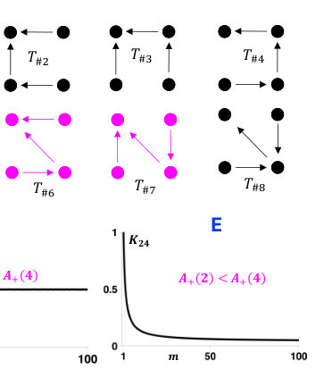
<figcaption class="paper-figure-caption"><b>Fig 1.</b> Figure 1. Single-edge driving yields either a mono- tonic response or energetic protection. (A) A four- state Markov process is driven out of equilibrium by scaling the single transition 1 →3 as ℓ(1 →3) = m ℓeq(1 →3) (red), with every other rate held at its equilibrium value. (B) The eight spanning trees rooted at vertex 1; the two trees T#6 and T#7 (magenta) compete to set the response. (C–E) The nor- malized response K24(m) ≡(π2/π4)/(πeq 2 /πeq 4 ) is fixed by the relative weights of these two trees: it increases monotonically when w(T#7) &gt; w(T#6) (C), decreases monotonically when w(T#7) &lt; w(T#6) (E), and stays pinned at K24(m) = 1 for all m when w(T#7) = w(T#6) (D), so that the ratio...</figcaption>
</figure>
<figure class="paper-figure-card">

<figcaption class="paper-figure-caption"><b>Fig 2.</b> Figure 2. A thermodynamic switch in a four-state Markov process. The network of Fig. 1A is driven by two energetic edges, 1 →3 (factor m, red) and 2 →3 (factor n, cyan), starting from an equilibrium configuration that sat- isfies the protection condition w(T#6) = w(T#7) (rates in Table S2). The black curve traces the response K24 as a two-stage protocol advances along the horizontal axis. In the protected region (first stage: n = 1 held fixed, m ramped from 1 to 100) protection pins π2/π4 to its equilibrium value, so K24 = 1 throughout. In the switching region (second stage: m = 100 held fixed, n ramped through the edge 2 →3) the response drops substantially. Energetic protection of the...</figcaption>
</figure>
<figure class="paper-figure-card">

<figcaption class="paper-figure-caption"><b>Fig 3.</b> Figure 3. Whether the second-stage switch is protocol-independent depends on the choice of sec- ond energetic edge. In both panels the first edge 1 →3 is ramped to a stopping (switch) value m∗and then held fixed while the second edge is ramped through n; curves are coloured by m∗, and the insets show the two energetic edges (m red, n cyan). Both panels use the same equilibrium rates, which satisfy the protection condition w(T#6) = w(T#7) with regard to the first energetic edge (1 →3), and differ only in which edge carries the second drive (Table S3). (A) Sec- ond edge 2 →3. Energetic protection extends from the single slice n = 1 to the full identity W(n) = 0 for all n (Supplement), so the...</figcaption>
</figure>
<figure class="paper-figure-card">

<figcaption class="paper-figure-caption"><b>Fig 4.</b> Figure 4. Two coupled energetic edges produce a sin- gle nonmonotonic bump. The energetic edges 1 →3 and 3 →4 are perturbed together by a common factor m from an equilibrium configuration (m = 1; rates in Ta- ble S4). (A) The normalized response K24(m) rises and then falls, with a single interior maximum. (B) Its slope obeys sgn K′ 24(m) = sgn N(m) with N(m) = ∆10+2∆20m+∆21m2</figcaption>
</figure>
</div>

<p><strong>Summary.</strong> This paper develops a graph-theoretic framework to study how information processing capabilities are constrained when physical systems operate far from equilibrium. The central finding is 'energetic protection,' which reveals that specific ratios can remain invariant despite strong external driving forces if certain algebraic relationships among spanning tree weights hold. This work establishes new, non-equilibrium constraints governing the functional logic of driven matter.</p>
<p><strong>Why it may be interesting.</strong> It provides novel, non-equilibrium invariants and robustness mechanisms that govern functional logic in driven systems, offering new constraints beyond standard detailed balance conditions relevant to open quantum systems dynamics.</p>
<details>
<summary>Detailed structure</summary>
<p><strong>Main problem.</strong> The research investigates how information-theoretic constraints, typically seen at equilibrium, persist or change when a physical system is driven far from thermodynamic equilibrium.</p>
<p><strong>Main result.</strong> The authors identify 'energetic protection,' a mechanism where specific steady-state ratios remain exactly locked to their equilibrium values regardless of the driving strength, provided an underlying algebraic equality among spanning-tree weights holds.</p>
<p><strong>Method.</strong> The analysis uses graph theory applied to continuous-time Markov processes, focusing on calculating normalized response functions using arboreal distributions derived from spanning trees.</p>
<p><strong>Model / system.</strong> The model is a finite-state, continuous-time Markov process defined on a directed graph. The dynamics are perturbed by scaling specific transition rates (energetic edges) to drive the system away from equilibrium.</p>
<p><strong>Key observables.</strong> The normalized ratio of steady-state probabilities ($K_{ij}$), which measures deviation from equilibrium, and the arboreal coefficients derived from spanning-tree weights.</p>
<p><strong>Important parameters / regimes.</strong> The driving strength parameter ($m$), which scales the rates of the energetic edges; the algebraic equality between spanning-tree weights.</p>
<p><strong>Assumptions / limitations.</strong> The analysis assumes the existence of a unique steady state and relies heavily on deriving necessary algebraic constraints among spanning tree weights to prove robustness.</p>
<p><strong>Figures summary.</strong> Figures illustrate how the response ratio behaves under driving, showing examples of monotonic change, perfect protection ($K_{ij}=1$), and the combination leading to a sharp 'thermodynamic switch.'</p>
<p><strong>Paper structure.</strong> The paper progresses from establishing equilibrium constraints to analyzing single-edge driving (showing monotonicity), then introducing the condition for energetic protection via spanning-tree weight equalities, culminating in the construction of a programmable thermodynamic switch using two edges.</p>
</details>
<details>
<summary>Abstract</summary>
<p>At equilibrium, the ratio of two steady-state probabilities is a Boltzmann factor, set by a free-energy difference. Such ratios are the natural, normalization-independent readouts of both thermodynamics and information processing, and are often used as a measure of fidelity in biophysical systems. What becomes of these ratios once a system is driven from equilibrium, where the Boltzmann factor no longer holds? Representing Markov processes as graphs and their steady states as averages over a distribution on spanning trees, the \emph{arboreal distribution}, we track the ratio $π_i/π_j$ under driving along \emph{energetic edges}, where detailed balance is broken, relative to its equilibrium value. Our central finding is that a chosen ratio can stay exactly locked to its equilibrium value arbitrarily far from equilibrium, a phenomenon we call \emph{energetic protection}, whenever an algebraic equality between spanning-tree weights holds. Just as detailed balance constrains rates around cycles, energetic protection constrains weights across trees, providing a new mechanism for robustness against fluctuations in the driving force, such as variations in ATP concentration. Away from this equality, single-edge driving collapses the response onto two arboreal coefficients and forces it to be monotonic, so nonmonotonic single-edge control is impossible at any strength. With two energetic edges, protection and monotonicity combine into a \emph{thermodynamic switch} that holds a function at its equilibrium value for as long as desired and releases it sharply. Equilibrium is known for the limits it places on information processing. We show that new constraints, both no-go principles and exact invariances, survive far from equilibrium. These results reveal how the localization of energy expenditure governs the functional logic of nonequilibrium systems in physics and biology.</p>
</details>
<p><sub><a href="#top">↑ back to top</a></sub></p>

<p><a id="paper-2607.03608"></a></p>
<h3 id="the-informational-cost-of-structure-representational-complexity-in-networked-dynamical-systems"><a href="http://arxiv.org/abs/2607.03608v1">The Informational Cost of Structure: Representational Complexity in Networked Dynamical Systems</a></h3>
<p><strong>Authors:</strong> Cyril Rommens, Pietro Traversa, Guilherme Ferraz de Arruda, Yamir Moreno<br>
<strong>Type:</strong> theory · <strong>Category:</strong> statistical mechanics · <strong>PDF:</strong> <a href="https://arxiv.org/pdf/2607.03608v1">https://arxiv.org/pdf/2607.03608v1</a><br>
<strong>Analysis basis:</strong> full PDF text, analyzed in chunks
<strong>Topic relevance:</strong> 🔥 <code>entanglement &amp; information structure</code> <strong>4/5</strong> · <code>analog quantum simulation</code> <strong>3/5</strong> · <code>methods for driven-dissipative</code> <strong>3/5</strong> · <code>correlated / nonlocal dissipation</code> <strong>2/5</strong> · <code>driven-dissipative phase transition</code> <strong>2/5</strong> · <code>non-equilibrium dynamics</code> <strong>2/5</strong> · <code>Keldysh / 2PI / non-Gaussian methods</code> <strong>1/5</strong> · <code>Rydberg arrays</code> <strong>1/5</strong> · <code>correlated cavity matter</code> <strong>1/5</strong> · <code>exotic spin models in light-matter</code> <strong>1/5</strong> · <code>non-equilibrium universality</code> <strong>1/5</strong></p>
<div class="figure-strip-hint">↔ Scroll figures horizontally</div>
<div class="paper-figures-scroll">
<figure class="paper-figure-card">
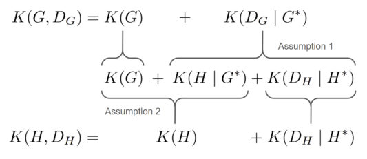
<figcaption class="paper-figure-caption"><b>Fig 1.</b> FIG. 1. Schematic decomposition of the complexity contributions of the graph and hypergraph representations under Assump- tions 1 and 2, which place them in the equivalence regime.</figcaption>
</figure>
</div>

<p><strong>Summary.</strong> This work introduces Representational Complexity to quantify the information overhead incurred when describing a dynamical system using specific structural models like graphs or hypergraphs. It shows that while expressive power is not enough, the choice of representation must minimize the total informational cost relative to the true dynamics. This framework suggests that genuinely many-body interactions require higher-order structures (hypergraphs) for an efficient and non-redundant description.</p>
<p><strong>Why it may be interesting.</strong> While abstract, the framework provides a rigorous information-theoretic lens for model selection. In AMO physics, choosing between pairwise coupling terms (like simple nearest-neighbor Hamiltonians) versus higher-order interactions (e.g., three-body or Rydberg blockade effects) can be quantified by this informational cost.</p>
<details>
<summary>Detailed structure</summary>
<p><strong>Main problem.</strong> The paper addresses determining the minimum informational cost required to represent a complex dynamical system using an explicit interaction structure and an evolution rule.</p>
<p><strong>Main result.</strong> The choice of representation (e.g., graph vs. hypergraph) is not determined by mere expressive power, but rather by minimizing the total informational cost relative to the intrinsic complexity of the dynamics itself.</p>
<p><strong>Method.</strong> It employs Algorithmic Information Theory, specifically using Representational Complexity ($    ext{RC}$), which measures the excess description length beyond the system's inherent Kolmogorov complexity $K(F)$.</p>
<p><strong>Model / system.</strong> The analysis focuses on abstract networked dynamical systems modeled by finite Boolean maps ($F: \{0, 1\}^N 	o \{0, 1\}^N$), comparing representations based on pairwise interactions (graphs) versus higher-order interactions (hypergraphs).</p>
<p><strong>Key observables.</strong> Representational Complexity ($ ext{RC}$), Algorithmic Mutual Information ($  ext{I}(D:S)$), and the difference in description length ($\Delta    ext{RC}$) between structural representations.</p>
<p><strong>Important parameters / regimes.</strong> The dimensionality of interactions ($k$), system size ($N$), and the specific constraints placed on admissible structures and rules (restricted vs. unrestricted settings).</p>
<p><strong>Assumptions / limitations.</strong> Kolmogorov complexity is uncomputable, so results are complemented with explicit description-length estimates; comparisons assume fixed coding conventions for asymptotic analysis.</p>
<p><strong>Figures summary.</strong> The notes detail several examples comparing costs: Group-Threshold dynamics favoring graphs if $k \ge 2$; SI-type rules showing external annotations add cost; and a direct comparison showing graph expansion of $k$-hyperedges is significantly more costly than the hypergraph representation for $k \ge 3$.</p>
<p><strong>Paper structure.</strong> The paper establishes $    ext{RC}$ as the core metric, first proving its non-negativity ($    ext{RC} \ge 0$). It then contrasts the unrestricted setting (where all formalisms are equivalent) with restricted settings where structural constraints lead to measurable differences in informational cost between graph and hypergraph models.</p>
</details>
<details>
<summary>Abstract</summary>
<p>How much information is required to represent a dynamical system in terms of an interaction structure and an evolution rule? We address this question using algorithmic information theory. We introduce Representational Complexity, the excess description length of a structure-plus-rule model relative to the shortest possible description of the dynamics itself. This intrinsic description defines a universal lower bound: no exact structural representation can be more concise. If arbitrary rules are allowed, graphs, hypergraphs, and other formalisms can all reach this bound by shifting information between structure and dynamics, so expressiveness alone cannot distinguish them. Meaningful differences arise only when scientific modeling restricts the admissible structures and rules. Within this setting, we identify conditions under which graph and hypergraph descriptions are informationally equivalent, and show how graph-preferred, hypergraph-preferred, and mixed regimes can emerge when those conditions are relaxed. Because Kolmogorov complexity is not computable, we complement the formal results with explicit description-length estimates. Our framework reframes the choice of network representation as a question of informational cost and mechanistic transparency rather than universal expressive power.</p>
</details>
<p><sub><a href="#top">↑ back to top</a></sub></p>

<p><a id="paper-2607.04873"></a></p>
<h3 id="bloch-sphere-rotations-in-driven-double-well-for-ultracold-atoms"><a href="http://arxiv.org/abs/2607.04873v1">Bloch-sphere rotations in driven double-well for ultracold atoms</a></h3>
<p><strong>Authors:</strong> Michele Modugno, Marco Fattori, Giulio Pettini<br>
<strong>Type:</strong> both · <strong>Category:</strong> quantum gases · <strong>PDF:</strong> <a href="https://arxiv.org/pdf/2607.04873v1">https://arxiv.org/pdf/2607.04873v1</a><br>
<strong>Analysis basis:</strong> full PDF text, analyzed in chunks
<strong>Topic relevance:</strong> 🔥 <code>analog quantum simulation</code> <strong>4/5</strong> · <code>exotic spin models in light-matter</code> <strong>3/5</strong> · <code>non-equilibrium dynamics</code> <strong>3/5</strong> · <code>QC/QI experiment</code> <strong>2/5</strong> · <code>methods for driven-dissipative</code> <strong>2/5</strong> · <code>non-equilibrium universality</code> <strong>2/5</strong> · <code>Keldysh / 2PI / non-Gaussian methods</code> <strong>1/5</strong> · <code>correlated / nonlocal dissipation</code> <strong>1/5</strong> · <code>driven-dissipative phase transition</code> <strong>1/5</strong> · <code>entanglement &amp; information structure</code> <strong>1/5</strong></p>
<div class="figure-strip-hint">↔ Scroll figures horizontally</div>
<div class="paper-figures-scroll">
<figure class="paper-figure-card">

<figcaption class="paper-figure-caption"><b>Fig 1.</b> FIG. 1. (a) Plot of the BNSL potential in Eq. (2). (b) Effec- tive approximation (3), corresponding to a symmetric dou- ble well with a spatial separation between the two minima a ≃4.436 µm. The first three energy levels εi (i = 1, 2, 3) of H0 in Eq. (1) are also shown, displayed as horizontal lines. (c) Spatially symmetric (blue solid line) and antisymmetric (red dot-dashed line) low-lying eigenfunctions. The potential (black solid line) is included for reference.</figcaption>
</figure>
<figure class="paper-figure-card">
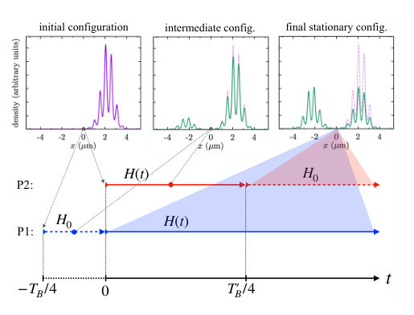
<figcaption class="paper-figure-caption"><b>Fig 2.</b> FIG. 2. Scheme of the two protocols P1 and P2 employed in this work (see text), indicated by blue and red lines, respec- tively. The top row displays three snapshots of the density configurations corresponding to the initial state (at different times for the two protocols), an intermediate configuration, and the final stationary configuration with equal population in the two wells.</figcaption>
</figure>
<figure class="paper-figure-card">

<figcaption class="paper-figure-caption"><b>Fig 3.</b> FIG. 3. Time evolution of the components of the Bloch unit vector for the two protocols, P1 (a) and P2 (b). See text for details.</figcaption>
</figure>
</div>

<p><strong>Summary.</strong> The authors demonstrate how controlled, arbitrary rotations of pseudospins can be achieved in an ultracold atomic double-well system using fast, time-periodic external driving. By applying Floquet engineering principles, they show that the system's dynamics can be precisely steered to manipulate the Bloch vector along any desired axis in the equatorial plane. This offers a powerful tool for quantum control applications in atom interferometry.</p>
<p><strong>Why it may be interesting.</strong> This work provides concrete experimental proposals for engineering quantum gates or manipulating spin states in ultracold atom systems by leveraging time-periodic driving fields, which is highly relevant to quantum simulation and measurement techniques in AMO physics.</p>
<details>
<summary>Detailed structure</summary>
<p><strong>Main problem.</strong> The research aims to achieve full coherent control over pseudospin dynamics (Bloch sphere rotations) in a trapped double-well system using time-periodic driving protocols.</p>
<p><strong>Main result.</strong> Controlled rotations about arbitrary axes in the equatorial plane of the Bloch sphere can be demonstrated, complementing previous methods that relied only on static biases.</p>
<p><strong>Method.</strong> The study employs numerical simulations and analytical derivations based on Floquet theory to model the system's time evolution operator.</p>
<p><strong>Model / system.</strong> The physical platform is a non-interacting Bose-Einstein condensate in a double-well potential realized using Beat-Note Superlattices. The dynamics are modeled by an effective two-level Hamiltonian subjected to a spatially linear, time-periodic driving potential.</p>
<p><strong>Key observables.</strong> Bloch sphere rotation vector components (n_x, n_y, n_z) and the renormalized Rabi period (T'_R).</p>
<p><strong>Important parameters / regimes.</strong> The drive frequency must satisfy the regime $
u_{12} \ll 
u \ll 
u_{23}$, and specific force amplitudes ($K=\pi/2$) are used to target desired rotations.</p>
<p><strong>Assumptions / limitations.</strong> The analysis assumes a non-interacting condensate, and the use of an effective two-level description is central to the control scheme.</p>
<p><strong>Figures summary.</strong> Figures illustrate the BNSL potential structure, the effective double-well approximation, and show the resulting Bloch vector trajectories for different control protocols (P1 and P2).</p>
<p><strong>Paper structure.</strong> The paper first establishes the physical platform using a static Hamiltonian, then introduces time-periodic driving. It develops the theoretical framework using Floquet theory to derive the evolution operator, before demonstrating two specific protocols (P1 and P2) that achieve controlled Bloch sphere rotations.</p>
</details>
<details>
<summary>Abstract</summary>
<p>We show that, by using suitable protocols for a non-interacting condensate in a driven double-well, one can achieve controlled rotations about arbitrary axes in the equatorial plane of the Bloch sphere, composed with fast rotations about the $z$-axis. Specifically, we investigate the dynamics induced by a spatially linear time-periodic potential, by means of numerical simulations. We also provide an explicit two-level model that accurately captures the microscopic evolution of the driven system, with the full time-dependent evolution operator obtained using a Floquet-based approach. The analysis is carried out using as a reference a recently realized experimental platform consisting of arrays of double-well potentials based on Beat-Note Superlattices, to which the proposed control scheme is directly applicable.</p>
</details>
<p><sub><a href="#top">↑ back to top</a></sub></p>

<p><a id="paper-2607.05361"></a></p>
<h3 id="coherent-control-of-energy-transport-at-room-temperature-in-a-noisy-bath"><a href="http://arxiv.org/abs/2607.05361v1">Coherent Control of Energy Transport at Room Temperature in a Noisy Bath</a></h3>
<p><strong>Authors:</strong> Davinder Singh, Paul Brumer<br>
<strong>Type:</strong> theory · <strong>Category:</strong> statistical mechanics · <strong>PDF:</strong> <a href="https://arxiv.org/pdf/2607.05361v1">https://arxiv.org/pdf/2607.05361v1</a><br>
<strong>Analysis basis:</strong> full PDF text, analyzed in chunks
<strong>Topic relevance:</strong> 🔥 <code>methods for driven-dissipative</code> <strong>4/5</strong> · 🔥 <code>non-equilibrium dynamics</code> <strong>4/5</strong> · <code>driven-dissipative phase transition</code> <strong>3/5</strong> · <code>interference shaping light</code> <strong>3/5</strong> · <code>correlated / nonlocal dissipation</code> <strong>2/5</strong> · <code>non-equilibrium universality</code> <strong>2/5</strong> · <code>Keldysh / 2PI / non-Gaussian methods</code> <strong>1/5</strong> · <code>analog quantum simulation</code> <strong>1/5</strong></p>
<div class="figure-strip-hint">↔ Scroll figures horizontally</div>
<div class="paper-figures-scroll">
<figure class="paper-figure-card">

<figcaption class="paper-figure-caption"><b>Fig 1.</b> Figure 1: Schematic of a reaction center connected donor-acceptor pair (with quantum states, common ground state |g⟩, excited donor (acceptor) state |d⟩(|a⟩), and reaction center state |r⟩) in the presence of monochromatic control fields ⃗Em (where m = d, a). Here, δωm = ωL −ωmg is the detuning of the monochromatic field, rm illustrates the incoherent pumping rate, γm denotes the spontaneous decay rate, and Γt(Γr) represents the trapping (recycling) rate.</figcaption>
</figure>
<figure class="paper-figure-card">
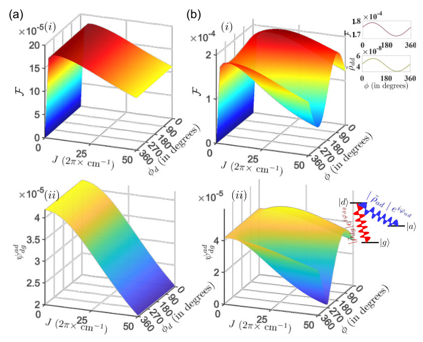
<figcaption class="paper-figure-caption"><b>Fig 2.</b> Figure 2: Illustration of (i) flux and (ii) interference pattern as a function of the relative phase between laser beams and the Coulomb coupling J (a) in the absence [or presence (b)] of |g⟩→|a⟩coherent beam. The coherent beam for transition |g⟩→|d⟩is on in both cases. Further, inset for b(i) shows the dependence of the flux (upper panel) on the donor population (lower panel) for J = 2π × 2 cm−1. Inset: for b(ii) depicts the interference pathways when both the laser beams are switched on. Note that for computational purposes, NESS solutions and hence the flux F is rescaled with respect to a normalization parameter γ = 2π × 10−3 cm−1.</figcaption>
</figure>
<figure class="paper-figure-card">
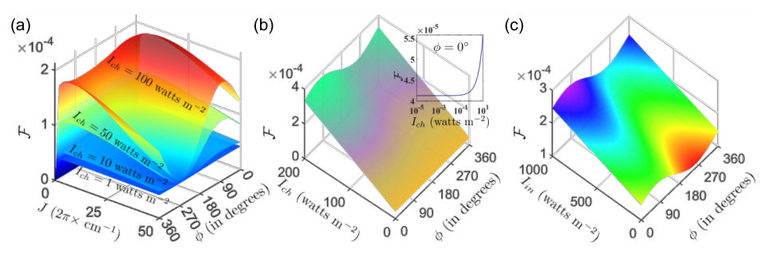
<figcaption class="paper-figure-caption"><b>Fig 3.</b> Figure 3: (a) Flux as a function of ϕ and J with different values of coherent source intensity. (b) Flux as a function of ϕ and coherent source intensity. (c) Flux as a function of ϕ and incoherent source intensity. Here, we have used J = 2π × 10 cm−1 in the simulation of (b)&amp;(c).</figcaption>
</figure>
<figure class="paper-figure-card">

<figcaption class="paper-figure-caption"><b>Fig 4.</b> Figure 4: (a) The effect of the system phonon bath coupling on flux for the different values of relative phase. (b) Evaluation of flux for the asymmetric donor-pair acceptor, i.e., δωda = ωd −ωa ̸= 0 as a function of ϕ. In this case, two laser beams are considered such that laser beam for |g⟩→|d⟩transition remains resonant, while laser beam for |g⟩→|a⟩transition becomes off-resonant with δωda ̸= 0. Here, we have used J = 2π × 10 cm−1.</figcaption>
</figure>
<figure class="paper-figure-card">

<figcaption class="paper-figure-caption"><b>Fig 5.</b> Fig.4(b)], indicating the persistence of interference in the presence of the energetic mismatch.</figcaption>
</figure>
</div>

<p><strong>Summary.</strong> The paper proposes using phase-controlled coherent fields to actively manage energy transfer between donor and acceptor sites in a noisy, open quantum system operating at steady state. By exploiting quantum interference effects, researchers demonstrate an 'optical energy switch' capable of enhancing or suppressing energy flux. This work is significant because it extends the concept of quantum control from idealized transient dynamics into realistic, dissipative environments like those found in natural light-harvesting complexes.</p>
<p><strong>Why it may be interesting.</strong> This work directly addresses the challenge of maintaining quantum control in realistic, dissipative environments (like biological systems at room temperature), extending quantum control theory beyond idealized, low-dissipation regimes into the NESS regime relevant for bio-photonics and energy harvesting.</p>
<details>
<summary>Detailed structure</summary>
<p><strong>Main problem.</strong> The research aims to achieve coherent control over energy transport within a Non-Equilibrium Steady State (NESS) in complex, noisy quantum systems at room temperature.</p>
<p><strong>Main result.</strong> Coherent excitation induces interference between energy transfer pathways, allowing for the phase-dependent modulation (switching or enhancement) of the energy flux even in the presence of significant environmental noise.</p>
<p><strong>Method.</strong> The dynamics are analyzed using the master equation approach within the rotating frame, solving for the steady state ($rac{d\hat{
ho}}{dt} = 0$) via numerical simulations and analytical derivations for simplified limits.</p>
<p><strong>Model / system.</strong> The model is a minimal donor-acceptor pair system (relevant to photosynthetic reaction centers) connected to an environment comprising both incoherent radiation baths and phonon baths, described by a full Hamiltonian and master equation.</p>
<p><strong>Key observables.</strong> Energy flux ($F$) between the donor and acceptor sites, and the donor-acceptor coherence ($    ilde{
ho}_{ad}$).</p>
<p><strong>Important parameters / regimes.</strong> Relative phase ($\phi$) of the coherent driving fields, bath temperature (300 K), coupling strengths ($\Omega$, $J$), and various decay/pumping rates.</p>
<p><strong>Assumptions / limitations.</strong> The analysis relies on approximations such as the Markovian approximation and weak coupling for system-bath interactions; it contrasts with traditional transient dynamics by focusing on the NESS.</p>
<p><strong>Figures summary.</strong> Figures illustrate the dependence of energy flux on the relative phase ($\phi$) when coherent fields are active, showing interference patterns, and compare how bath coupling strength affects this phase dependence.</p>
<p><strong>Paper structure.</strong> The paper establishes the full Hamiltonian and master equation governing the system. It then analyzes the NESS by solving for coherence and flux, demonstrating that coherent driving leads to phase-dependent modulation of energy transfer, which is robust against moderate environmental noise.</p>
</details>
<details>
<summary>Abstract</summary>
<p>Coherent control of energy transport in a non-equilibrium steady-state (NESS) in a reaction-center-connected donor-acceptor pair is proposed. The pigments are considered to be continuously interacting with incoherent radiation and a phonon bath while being driven by phase-controlled coherent fields. Coherent excitation of the donor-acceptor pair is shown to induce interference between excitation pathways, resulting in phase dependent modulation of the flux. As a consequence one can enhance or suppress energy transfer via interference, e.g. an optical energy switch. The persistence of such interference enables coherent control at a NESS in dissipative regime suggests an extension of the operational scope of quantum control from traditional transient domain with low dissiaption to noisy environment NESS at room temperature.</p>
</details>
<p><sub><a href="#top">↑ back to top</a></sub></p>

<p><a id="paper-2607.04090"></a></p>
<h3 id="controlling-atom-array-in-an-ultra-high-cooperativity-optical-cavity"><a href="http://arxiv.org/abs/2607.04090v1">Controlling Atom Array in an Ultra-high-cooperativity Optical Cavity</a></h3>
<p><strong>Authors:</strong> Jilai Ye, Zhihao Chi, Ye Tian, Shuyao Mei, Xiaoyu Li, Wenjun Zhang, Yajuan Zhao, Jiazhong Hu, Wenlan Chen<br>
<strong>Type:</strong> experiment · <strong>Category:</strong> other · <strong>PDF:</strong> <a href="https://arxiv.org/pdf/2607.04090v1">https://arxiv.org/pdf/2607.04090v1</a><br>
<strong>Analysis basis:</strong> full PDF text, analyzed in chunks
<strong>Topic relevance:</strong> 🔥 <code>Tavis-Cummings &amp; cavity-many-emitter</code> <strong>4/5</strong> · 🔥 <code>analog quantum simulation</code> <strong>4/5</strong> · <code>correlated cavity matter</code> <strong>3/5</strong> · <code>quantum optics experiment</code> <strong>3/5</strong> · <code>QC/QI experiment</code> <strong>2/5</strong> · <code>driven-dissipative phase transition</code> <strong>1/5</strong> · <code>entanglement &amp; information structure</code> <strong>1/5</strong> · <code>interference shaping light</code> <strong>1/5</strong></p>
<div class="figure-strip-hint">↔ Scroll figures horizontally</div>
<div class="paper-figures-scroll">
<figure class="paper-figure-card">
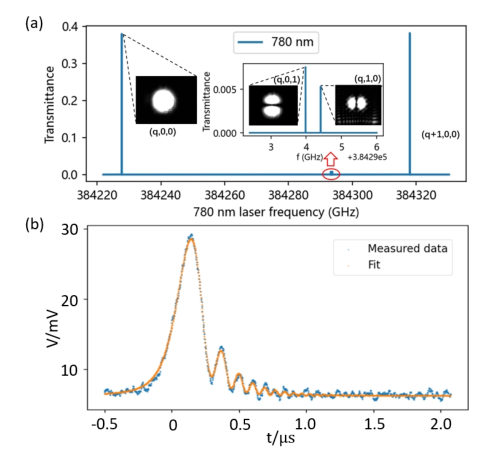
<figcaption class="paper-figure-caption"><b>Fig 1.</b> FIG. 2. Cavity characterization. (a) Transmission spec- trum of a 780 nm probe laser sweeping over one free spectral range (FSR) of the cavity. The frequency spacing between two adjacent fundamental transverse (TEM00) modes is the νFSR = 89.7 GHz, which gives a cavity length L = 1.67 mm. In the cavity mode labeling (q, m, n), q is the longitudinal mode index, m and n are the transverse mode indices. The frequency spacings between the TEM01 and TEM10 modes and TEM00 mode are 66.0 GHz and 66.5 GHz, respectively. The inset shows the transmission spectrum of TEM01 and TEM10. (b) Ring-down measurement of the cavity. This is achieved by rapidly sweeping the laser frequency across the resonance...</figcaption>
</figure>
<figure class="paper-figure-card">
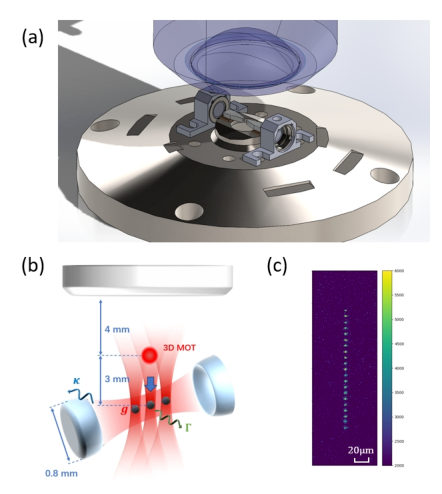
<figcaption class="paper-figure-caption"><b>Fig 2.</b> FIG. 1. Integrated cavity-atom array platform. (a) The me- chanical design of the cavity assembly, in which two con- cave mirrors on top of the shear piezo actuators, and col- limation lenses are mounted on titanium structures. (b) Schematic of the optical tweezer array coupled to the cav- ity mode, with low-aberration viewport above them. The co- herent atom-cavity coupling rate g, cavity decay rate κ, and atomic linewidth Γ are indicated. (c) Fluorescence image of atoms loaded into tweezers overlapping with the cavity mode. In the present implementation, up to 21 individually trapped atoms can be rearranged and loaded into the cavity mode and coupled to the antinode of the cavity...</figcaption>
</figure>
<figure class="paper-figure-card">
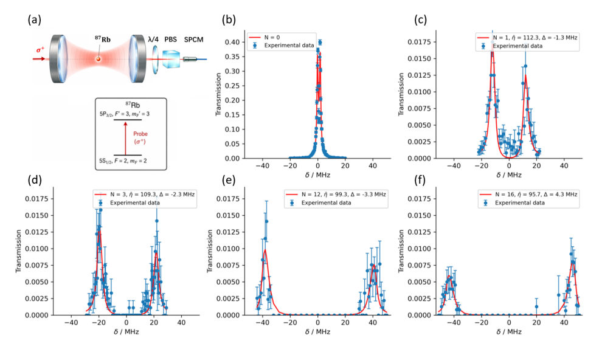
<figcaption class="paper-figure-caption"><b>Fig 3.</b> FIG. 3. Atom-cavity transmission spectra. (a) Atomic transition used in the spectroscopy, 5S1/2|F = 2, mF = 2⟩→5P3/2|F ′ = 3, mF ′ = 3⟩of 87Rb. (b) Empty-cavity transmission spectrum. Here δ = ω −ωc is the frequency difference between the probe light ω and the cavity resonance ωc, and ∆= ωa −ωc is the atom-cavity detuning. The observed doublet arises from the fact that the two nearly orthogonal cavity polarization eigenmodes have slightly different resonance frequencies. (c)(d)(e)(f) Spectra for N=1,3,12,16 trapped atoms prepared at different tweezer sites inside the cavity mode; the similar line shapes indicate nearly uniform coupling for atoms positioned in the central region of the array....</figcaption>
</figure>
</div>

<p><strong>Summary.</strong> The research reports the creation of an integrated platform combining neutral-atom arrays with an ultra-high-cooperativity optical cavity. By developing advanced mirror fabrication techniques, they achieved a high cooperativity regime while retaining large mode volume and the ability to trap many individual atoms. This opens pathways for complex quantum state manipulation in solid-state or chip-scale quantum simulators.</p>
<p><strong>Why it may be interesting.</strong> This work directly addresses a major engineering hurdle in quantum simulation: building scalable platforms that maintain strong light-matter interaction necessary for complex quantum protocols like entanglement generation or readout.</p>
<details>
<summary>Detailed structure</summary>
<p><strong>Main problem.</strong> The challenge is integrating neutral-atom arrays, which provide scalable qubit architectures, with high-cooperativity optical cavities for strong light-matter coupling into a single platform.</p>
<p><strong>Main result.</strong> The authors successfully realized an integrated system achieving high cooperativity ($\eta_{	ext{cav}} = 125 \pm 13$) while maintaining large mode volume and the ability to couple up to 16 individually trapped atoms.</p>
<p><strong>Method.</strong> They employed a two-step mirror fabrication method (mechanical shaping + CO2 laser polishing) to create high-quality, concave fused-silica mirrors for the cavity. Atom coupling was verified by measuring transmission spectra as a function of the number of trapped atoms.</p>
<p><strong>Model / system.</strong> The platform consists of an atomic array coupled to a millimeter-scale Fabry-Pérot optical cavity. Atoms are trapped in an intracavity lattice, allowing controlled interaction with the cavity mode.</p>
<p><strong>Key observables.</strong> Single-atom cooperativity ($\eta_{	ext{cav}}$), effective spectroscopic cooperativity ($\eta_{	ext{spec}}$), and cavity transmission spectra as a function of coupled atoms ($N$).</p>
<p><strong>Important parameters / regimes.</strong> High cooperativity regime ($\eta_{	ext{cav}} = 125 \pm 13$); millimeter-scale cavity length; sub-2 Å mirror roughness.</p>
<p><strong>Assumptions / limitations.</strong> The primary comparison is between the ideal single-atom cooperativity ($\eta_{	ext{cav}}$) and the measured in-situ value ($\eta_{	ext{spec}}$), with discrepancies attributed to atomic positioning errors or finite temperature effects.</p>
<p><strong>Figures summary.</strong> Figure 2 characterizes the cavity resonance (high finesse, specific linewidth $\kappa$). Figure 3 shows the atom-cavity transmission spectra, demonstrating the collective response as more atoms are added.</p>
<p><strong>Paper structure.</strong> The paper first identifies the technical challenge of combining large mode volume for arrays with high cooperativity. It then details the advanced mirror fabrication technique enabling the cavity. Finally, it presents spectroscopic measurements confirming strong coupling and scalability up to 16 atoms.</p>
</details>
<details>
<summary>Abstract</summary>
<p>Neutral-atom array and cavity quantum electrodynamics offer complementary strengths for quantum science: scalable, reconfigurable qubit architectures and strong coherent light-matter coupling. Combining them in a single platform requires an optical cavity with simultaneously high cooperativity, sufficient mode volume to accommodate atom array, and ample side optical access for atom trapping, imaging, cooling, and rearrangement, a combination that is challenging to achieve. Here we realize an atomic array integrated with a millimeter-scale Fabry--Pérot cavity whose optically-characterized single-atom cooperativity reaches $η_{\mathrm{cav}}=125\pm13$. Atom-cavity transmission spectra of trapped atoms yield an effective spectroscopic cooperativity $η_{\mathrm{spec}}=112.3\pm3.3$, providing an in-situ verification of strong coupling in the integrated platform, and we demonstrate simultaneous coupling of up to 16 individually trapped atoms to the antinode of the cavity mode. The key technical advance is a two-step mirror-fabrication method combining precision mechanical shaping and carbon-dioxide laser polishing, which produces concave fused-silica mirrors with sub-millimeter radii of curvature and residual roughness below 2 Å. Our results establish a regime of cavity-integrated atomic array that simultaneously provides high cooperativity, large mode volume, and flexible manipulation of individual atoms, opening opportunities for cavity-assisted quantum state readout and long-range entanglement-engineering in atom-array platforms.</p>
</details>
<p><sub><a href="#top">↑ back to top</a></sub></p>

<p><a id="paper-2607.04115"></a></p>
<h3 id="infrared-divergences-as-itinerant-vacua"><a href="http://arxiv.org/abs/2607.04115v1">Infrared Divergences as Itinerant Vacua</a></h3>
<p><strong>Authors:</strong> Masahiro Morikawa<br>
<strong>Type:</strong> theory · <strong>Category:</strong> statistical mechanics · <strong>PDF:</strong> <a href="https://arxiv.org/pdf/2607.04115v1">https://arxiv.org/pdf/2607.04115v1</a><br>
<strong>Analysis basis:</strong> full PDF text, analyzed in chunks
<strong>Topic relevance:</strong> 🔥 <code>Keldysh / 2PI / non-Gaussian methods</code> <strong>4/5</strong> · <code>correlated / nonlocal dissipation</code> <strong>3/5</strong> · <code>driven-dissipative phase transition</code> <strong>3/5</strong> · <code>methods for driven-dissipative</code> <strong>3/5</strong> · <code>non-equilibrium dynamics</code> <strong>3/5</strong> · <code>non-equilibrium universality</code> <strong>2/5</strong></p>
<div class="figure-strip-hint">↔ Scroll figures horizontally</div>
<div class="paper-figures-scroll">
<figure class="paper-figure-card">

<figcaption class="paper-figure-caption"><b>Fig 1.</b> Low-resolution page preview, page 2</figcaption>
</figure>
<figure class="paper-figure-card">

<figcaption class="paper-figure-caption"><b>Fig 2.</b> Low-resolution page preview, page 3</figcaption>
</figure>
<figure class="paper-figure-card">
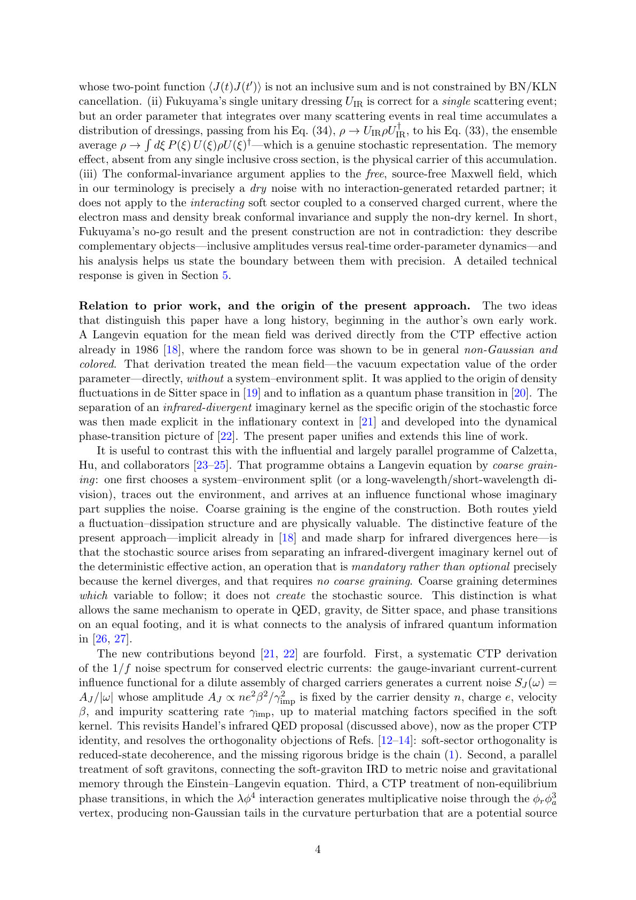
<figcaption class="paper-figure-caption"><b>Fig 3.</b> Low-resolution page preview, page 4</figcaption>
</figure>
<figure class="paper-figure-card">

<figcaption class="paper-figure-caption"><b>Fig 4.</b> Low-resolution page preview, page 5</figcaption>
</figure>
<figure class="paper-figure-card">
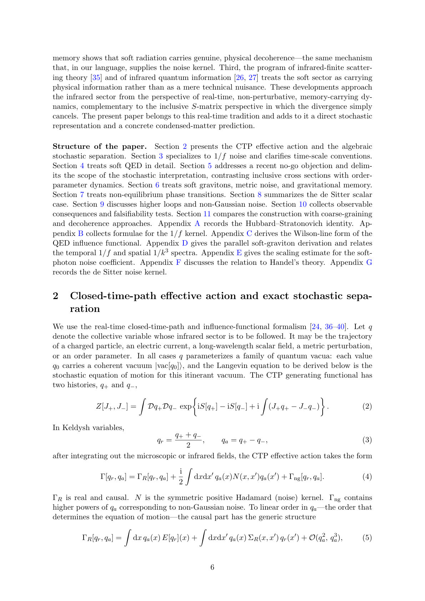
<figcaption class="paper-figure-caption"><b>Fig 5.</b> Low-resolution page preview, page 6</figcaption>
</figure>
</div>

<p><strong>Summary.</strong> This paper reinterprets infrared divergences not as calculation errors but as physical signatures of an 'itinerant vacuum' undergoing continuous transitions. By employing the closed-time-path effective action, it rigorously derives how these divergences generate observable classical stochastic noise sources. This unified framework successfully explains $1/f$ noise and memory effects across soft QED, cosmology, and general non-equilibrium physics.</p>
<p><strong>Why it may be interesting.</strong> It provides a powerful, unified mathematical tool—the stochastic source derived from IR divergences in the CTP formalism—to model complex, open quantum system dynamics without resorting to standard environment splitting assumptions common in AMO physics.</p>
<details>
<summary>Detailed structure</summary>
<p><strong>Main problem.</strong> The paper develops a constructive viewpoint for Infrared Divergences (IRDs), treating them not as pathologies to be removed, but as signatures of an "itinerant vacuum." This framework aims to unify the origin of various noise sources in non-equilibrium quantum systems.</p>
<p><strong>Main result.</strong> IRDs are shown to manifest as a classical stochastic source term within the real-time effective action, unifying phenomena like $1/f$ current noise, primordial power spectra, and gravitational memory under one mechanism.</p>
<p><strong>Method.</strong> The core method involves an exact separation in the closed-time-path (CTP) effective action, converting the imaginary part of the influence functional into a classical stochastic source via a Hubbard–Stratonovich identity.</p>
<p><strong>Model / system.</strong> The theory is applied to several physical arenas: soft QED, scalar fields evolving in de Sitter space, soft gravitons, and general non-equilibrium phase transitions where a classical order parameter evolves through inequivalent quantum vacua.</p>
<p><strong>Key observables.</strong> $1/f$ noise spectrum (e.g., $S_J(\omega) \propto 1/|\omega|$), gravitational memory effects, and non-Gaussian fluctuations in order parameters.</p>
<p><strong>Important parameters / regimes.</strong> The infrared cutoff ($\omega_{	ext{IR}}$) is central; the analysis relies on the structure of the retarded kernel (memory) versus the noise kernel (uncertainty).</p>
<p><strong>Assumptions / limitations.</strong> The approach requires no prior coarse graining or decoherence assumption, deriving stochasticity directly from the CTP effective action's imaginary part.</p>
<p><strong>Paper structure.</strong> The paper builds by first establishing the general formalism using the CTP effective action to generate Langevin equations. It then applies this framework systematically to soft QED (soft photons), soft gravitons, and non-equilibrium transitions, demonstrating consistency across these disparate physical systems.</p>
</details>
<details>
<summary>Abstract</summary>
<p>Infrared divergences (IRDs) are usually treated as pathologies to be cancelled, regularized, or hidden in dressed asymptotic states. This paper develops a complementary and constructive viewpoint: an IRD is the signature of an \emph{itinerant vacuum} -- a quantum vacuum that wanders continuously through a family of inequivalent states as a classical order parameter evolves. Each value of the order parameter carries its own coherent vacuum, so moving the order parameter means traversing a succession of orthogonal vacua. The IRD is the field-theoretic cost of this wandering, and the $1/f$ noise, gravitational memory, and non-Gaussian fluctuations that emerge from it are its observable classical remnants.   The technical core is an exact separation in the real-time closed-time-path (CTP) effective action. The infrared-divergent imaginary part of the influence functional must not be left as a divergent coefficient in a deterministic equation of motion; it is instead converted, by a Hubbard--Stratonovich identity, into a classical stochastic source. This step is an algebraic identity of the generating functional and requires no prior coarse graining or decoherence assumption: the retarded kernel encodes the memory of past vacuum transitions, while the noise kernel encodes the quantum uncertainty of the next one. We apply this construction to four parallel arenas -- soft QED, scalar fields in de Sitter space, soft gravitons, and non-equilibrium phase transitions -- and show that the same itinerant-vacuum mechanism underlies $1/f$ current noise, the primordial power spectrum, gravitational memory, and order-parameter dynamics. A geometric formulation in terms of a Hilbert-space bundle over the vacuum manifold is outlined as an outlook.</p>
</details>
<p><sub><a href="#top">↑ back to top</a></sub></p>

<p><a id="paper-2607.05194"></a></p>
<h3 id="nucleation-and-time-reversal-symmetry-breaking-in-nonconserved-scalar-field-theories"><a href="http://arxiv.org/abs/2607.05194v1">Nucleation and time-reversal symmetry breaking in nonconserved scalar field theories</a></h3>
<p><strong>Authors:</strong> Noah Ziethen, Michalis Chatzittofi, Michael E. Cates, Cesare Nardini<br>
<strong>Type:</strong> theory · <strong>Category:</strong> statistical mechanics · <strong>PDF:</strong> <a href="https://arxiv.org/pdf/2607.05194v1">https://arxiv.org/pdf/2607.05194v1</a><br>
<strong>Analysis basis:</strong> full PDF text, analyzed in chunks
<strong>Topic relevance:</strong> 🔥 <code>non-equilibrium dynamics</code> <strong>4/5</strong> · <code>driven-dissipative phase transition</code> <strong>3/5</strong> · <code>methods for driven-dissipative</code> <strong>3/5</strong> · <code>non-equilibrium universality</code> <strong>3/5</strong> · <code>correlated / nonlocal dissipation</code> <strong>2/5</strong> · <code>Frenkel-Kontorova</code> <strong>1/5</strong> · <code>Keldysh / 2PI / non-Gaussian methods</code> <strong>1/5</strong> · <code>analog quantum simulation</code> <strong>1/5</strong></p>
<div class="figure-strip-hint">↔ Scroll figures horizontally</div>
<div class="paper-figures-scroll">
<figure class="paper-figure-card">

<figcaption class="paper-figure-caption"><b>Fig 1.</b> FIG. 1. (a) Nucleation of a two-dimensional spherical droplet; after reaching the critical radius, the ϕ2 phase invades the re- mainder by a deterministic relaxation. (b) Shape of the den- sity profile as a function of the radial coordinate (coloured lines) while the black solid lines correspond to the determin- istic (T = 0) φ(r) profiles. (c) Plot of I(y) defined in Eq. (5); The root I(R) = 0 defines the radius R of the droplet.</figcaption>
</figure>
<figure class="paper-figure-card">
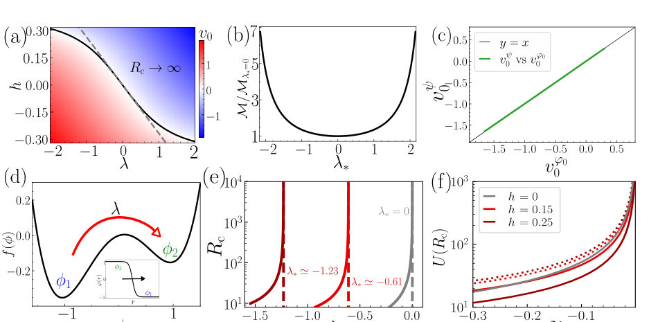
<figcaption class="paper-figure-caption"><b>Fig 2.</b> FIG. 2. (a) The velocity of one-dimensional interface (v0) as a function of h, λ obtained from numerical integration of AMA via a pseudo-spectral method. For the simulations the number of points for space discretization is Nx = 1024, domain length L = 16π and dt = 10−3. The grey line corresponds to the perturbative result h = −4λ/15 for h, λ ≪1 [see Eq. (51)]. The solid black line is where the interface is static. (b) The normalized mobility of the interface along the static line in (a). (c) Numerical comparison of vψ 0 and vφ0 0 for h = 0.25, found via a pseudo-spectral method. (d) Example plot of the potential f(ϕ) for h = 0.1. At large enough λ, stability is reversed so that the globally...</figcaption>
</figure>
<figure class="paper-figure-card">
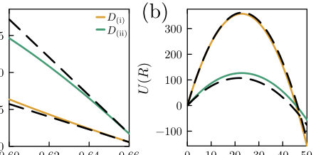
<figcaption class="paper-figure-caption"><b>Fig 3.</b> FIG. 3. Mobility (a) and quasi-potential (b) for the popula- tion dynamics model variants. The colored lines correspond to the solutions from the full profile φ0 (from evaluating nu- merically Eq. (14) in panel (a) and Eq. (15) in panel (b)) and the dashed lines from perturbation theory in small s−2/3. To obtain the continuum lines, the profile φ0 was found by nu- merically solving Eq. (63) with a simple explicit Euler scheme for T = 0. The quasi-potentials are evaluated for s = 0.65 and we considered D0 = 10−3 throughout.</figcaption>
</figure>
<figure class="paper-figure-card">

<figcaption class="paper-figure-caption"><b>Fig 4.</b> FIG. 4. Minimum action path for Active Model A (top row) and Population dynamics model with D = D(i)(ϕ)(bottom row) from a Ritz method based on [77]. (a, d) Lagrangian L(t) along the minimum action path. The red dots mark the saddles, where L(t) first vanishes. (b, e) Absolute value of the radially weighted drift ||µ|| (see Eq. 77) along the minimal action path, where the zero drift corresponds to the saddle. (c, f) Radial order parameter field φ(r) along minimal action path. The red lines correspond to the respective saddles where the drift vanishes. The vertical lines correspond to the extracted critical radii Rc. Parameters for AMA are λ = −1.033, h = 0.2 and for the population dynamics...</figcaption>
</figure>
<figure class="paper-figure-card">
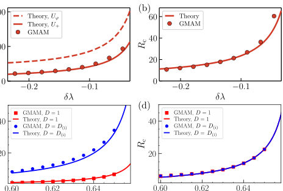
<figcaption class="paper-figure-caption"><b>Fig 5.</b> FIG. 5. (a)-(b) Quasipotential barrier heights and critical radii obtained by numerical action minimization for AMA (dots) and the corresponding NNT prediction (solid line). The dashed line shows the prediction from the TRR ansatz. Data is shown for fixed h = 0.2 and varying λ = λ∗(h) + δλ where λ∗(0.2) = −0.8768. (c)-(d) Results on population dy- namics, the solid line shows our NNT predictions, and the red squares are the results from the numerical minimization. Re- sults for the equilibrium case, D(ϕ) = 1, and for D = D(i)(ϕ), are both shown. Numerical parameters as in Fig. 4 and D0 = 10−2.</figcaption>
</figure>
</div>

<p><strong>Summary.</strong> This paper develops Nonequilibrium Nucleation Theory (NNT) to describe phase transitions in complex, non-equilibrium systems like active matter. It rigorously derives the dynamics by projecting stochastic field equations onto a reaction coordinate, showing that standard assumptions about time-reversal symmetry fail. NNT provides a systematic framework for calculating nucleation barriers in systems far from equilibrium.</p>
<p><strong>Why it may be interesting.</strong> While focused on classical statistical mechanics, the rigorous development of NNT for non-equilibrium systems provides powerful mathematical tools applicable to open quantum systems where detailed balance might be broken (e.g., driven quantum baths or dissipative quantum computing environments).</p>
<details>
<summary>Detailed structure</summary>
<p><strong>Main problem.</strong> The work provides a full, rigorous account of Nonequilibrium Nucleation Theory (NNT), generalizing classical nucleation theory to non-equilibrium field theories where the order parameter is not conserved.</p>
<p><strong>Main result.</strong> NNT yields a quasipotential barrier that differs from predictions based on assuming time-reversal symmetry in the instanton path. The stochastic route and self-consistent action minimization both successfully reproduce these results for active matter and population dynamics models.</p>
<p><strong>Method.</strong> The authors employ two equivalent theoretical derivations: projecting the full stochastic field equation onto a radial reaction coordinate (stochastic route) and minimizing the Freidlin-Wentzell action while carefully avoiding assumptions of time-reversal symmetry.</p>
<p><strong>Model / system.</strong> The theory applies to nonconserved scalar field theories governed by a Langevin equation, modeling phase transitions like fluid demixing or crystallization. Explicit examples include an active generalization of Model A and various population dynamics models.</p>
<p><strong>Key observables.</strong> Nucleation rate, quasipotential barrier height U(R), critical radius R_c, and the interfacial density profile.</p>
<p><strong>Important parameters / regimes.</strong> The noise coefficient D(phi) and the deterministic drift function mu[phi] characterize the non-equilibrium nature of the system. The theory is particularly useful in the limit of large critical radius.</p>
<p><strong>Assumptions / limitations.</strong> The primary assumption addressed is that standard methods relying on time-reversal symmetry (TRR ansatz) fail for non-equilibrium systems; NNT provides a systematic framework to bypass this limitation.</p>
<p><strong>Figures summary.</strong> Figure 1 illustrates the nucleation process, showing droplet formation, density profiles across the interface, and the definition of the reaction coordinate root R where an integral I(y) vanishes.</p>
<p><strong>Paper structure.</strong> The paper first contrasts NNT with CNT, then presents two derivations for the dynamics ($\dot{R}$): a stochastic projection and an action minimization. It highlights the discrepancy between these methods when TRR is assumed versus when it is not, validating the correct approach on active matter and population models.</p>
</details>
<details>
<summary>Abstract</summary>
<p>Classical nucleation theory (CNT) describes the formation of a stable phase from a metastable one in terms of a single reaction coordinate that corresponds to the radius of a nucleating droplet. In this work, we provide a full account of nonequilibrium nucleation theory (NNT), which generalizes CNT to non-equilibrium field theories with non-conserved order parameter. We present two equivalent derivations of the dynamics of the droplet radius: a stochastic route, based on a direct projection of the stochastic field equation onto the radial reaction coordinate, and a route based on the minimization of the Freidlin-Wentzell action. Crucially, the quasipotential barrier predicted by NNT differs from the one found when assuming the instanton to be the time-reversal of the relaxation dynamics. Whereas the interfacial density profile differs from that on the relaxation path, an analytical derivation of NNT remains possible using a careful definition of the reaction coordinate. This leverages the perturbative structure that (in common with CNT) emerges in the limit of large critical radius. We further derive with similar techniques the dynamics of capillary waves, whose stability is required for the CNT/NNT precept of a near-spherical droplet to prevail. After deriving our theory for generic non-conserved field-theories, we address two explicit examples: a non-equilibrium generalization of Model A (Active Model A), and a population dynamics model (with two choices of noise that each break time-reversal symmetry). In both cases, we validate our analytical NNT against numerical results obtained by action minimization, with excellent agreement. NNT provide a systematic framework for constructing nucleation theories in a broad class of non-equilibrium systems from active matter, reaction-diffusion systems and population dynamics.</p>
</details>
<p><sub><a href="#top">↑ back to top</a></sub></p>

<p><a id="paper-2607.04672"></a></p>
<h3 id="a-path-superposition-framework-for-quantum-gate-teleportation"><a href="http://arxiv.org/abs/2607.04672v1">A Path-Superposition Framework for Quantum Gate Teleportation</a></h3>
<p><strong>Authors:</strong> Santiago Ávila, Marco Enríquez<br>
<strong>Type:</strong> both · <strong>Category:</strong> quantum information and computing · <strong>PDF:</strong> <a href="https://arxiv.org/pdf/2607.04672v1">https://arxiv.org/pdf/2607.04672v1</a><br>
<strong>Analysis basis:</strong> full PDF text, analyzed in chunks
<strong>Topic relevance:</strong> 🔥 <code>quantum optics experiment</code> <strong>4/5</strong> · <code>QC/QI experiment</code> <strong>3/5</strong> · <code>interference shaping light</code> <strong>3/5</strong> · <code>entanglement &amp; information structure</code> <strong>2/5</strong> · <code>quantum measurements</code> <strong>2/5</strong> · <code>analog quantum simulation</code> <strong>1/5</strong> · <code>correlated cavity matter</code> <strong>1/5</strong> · <code>non-equilibrium dynamics</code> <strong>1/5</strong></p>
<div class="figure-strip-hint">↔ Scroll figures horizontally</div>
<div class="paper-figures-scroll">
<figure class="paper-figure-card">
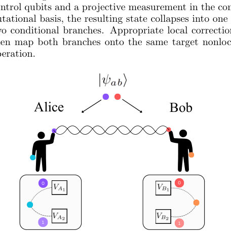
<figcaption class="paper-figure-caption"><b>Fig 1.</b> FIG. 1. Schematic diagram depicting distribution of qubits and the corresponding coherently controlled operations be- tween Alice and Bob. Both parties possess one local qubit, |ψA⟩and |ψB⟩(blue and orange), and one entangled resource |ψab⟩. The measurement of this control resource mediates the superposition of paths, causing |ψA⟩(|ψB⟩) to undergo the transformation VA1 (VB1) or VA2 (VB2).</figcaption>
</figure>
<figure class="paper-figure-card">
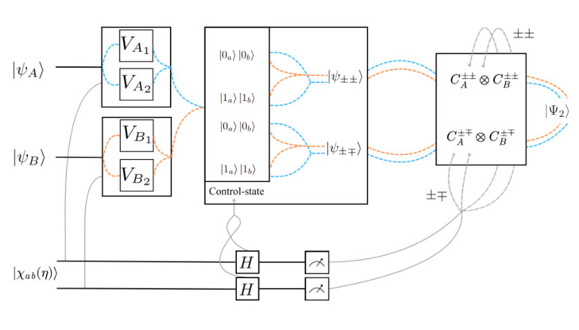
<figcaption class="paper-figure-caption"><b>Fig 2.</b> FIG. 2. Schematic representation of the full teleportation protocol. Coherent control is illustrated by showing the two possible orderings that |ψA⟩and (|ψB⟩) undergo, mediated by the entangled control pair (gray wires). This generates a superposition of paths, depicted by the dashed blue and orange wires. A Hadamard gate is then applied to each control qubit, transforming the initial control superposition of |00⟩and |11⟩to |00⟩, |11⟩, |10⟩, and |01⟩, represented by the gray wires mediating the superpositions in the control-state. A measurement of the control qubit collapses the system onto one of the two Alice and Bob subsystems, allowing them to perform the appropriate correction. The...</figcaption>
</figure>
<figure class="paper-figure-card">
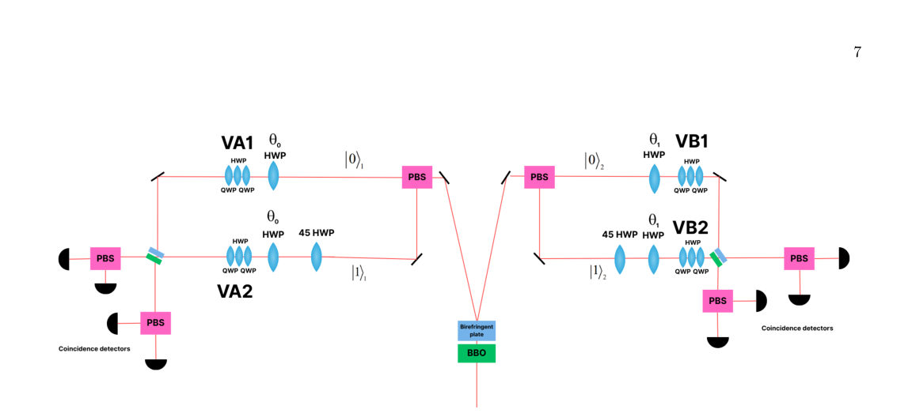
<figcaption class="paper-figure-caption"><b>Fig 3.</b> FIG. 3. Proof-of-concept photonic realization of the proposed framework. A BBO-based SPDC source generates a polarization- entangled photon pair [30], PBSs map polarization into spatial path modes, and 45◦HWPs transfer the entanglement to the path DOF [4]. A HWP at angle (θ) then prepares each polarization qubit in an arbitrary linear-polarization state. Additional HWP and QWP sequences implement path-dependent polarization operations that can perform any SU(2) unitary transformation [31], therefore able to apply the V set gates. Recombination of the two spatial paths using a 50/50 beam splitter results in Hadamard like operations [26], replicating equation (6). The resulting coincidence...</figcaption>
</figure>
</div>

<p><strong>Summary.</strong> This paper introduces a general framework utilizing 'path superposition' to deterministically teleport arbitrary quantum gates, demonstrating its applicability to CNOT and CZ gates. It establishes necessary design conditions based on resource phases and local unitaries. The work culminates in outlining a proof-of-concept photonic realization using spatial paths and polarization degrees of freedom.</p>
<p><strong>Why it may be interesting.</strong> The use of path superposition as an alternative physical resource for quantum information processing is highly relevant. The connection between abstract design conditions and concrete optical implementations (like Mach-Zehnder interferometers) provides valuable insight into building scalable quantum hardware.</p>
<details>
<summary>Detailed structure</summary>
<p><strong>Main problem.</strong> The goal is to develop a general, systematic framework for achieving deterministic quantum gate teleportation across distant parties without physically moving the qubits.</p>
<p><strong>Main result.</strong> The authors establish that path superposition serves as a versatile resource, allowing CNOT and CZ gates (and potentially others) to be deterministically teleported using a common protocol architecture.</p>
<p><strong>Method.</strong> The framework relies on selecting specific phases ($\eta$) for a pre-shared entangled resource and designing local unitary operators ($V_{A}, V_{B}$) that satisfy three derived design conditions.</p>
<p><strong>Model / system.</strong> The model is abstractly defined by the path superposition resource, but a concrete proof-of-concept realization uses photonic systems where polarization encodes qubits and spatial paths encode entanglement control.</p>
<p><strong>Key observables.</strong> Coincidence measurement outcomes ($\pm\pm$ or $\pm\mp$) are used to determine which local correction operations must be applied to reconstruct the target gate.</p>
<p><strong>Important parameters / regimes.</strong> The relative phase $\eta$ of the entangled resource is a key parameter, and the design conditions constrain the choice of local unitaries.</p>
<p><strong>Assumptions / limitations.</strong> The framework assumes the existence of suitable local unitary operators satisfying the derived design conditions; the photonic realization is presented as a proof-of-concept under ideal conditions.</p>
<p><strong>Figures summary.</strong> Figure 1 shows the general qubit distribution and controlled operations. Figure 2 illustrates the full teleportation protocol using path superposition paths, Hadamard gates, measurement collapse, and correction paths. Figure 3 details the photonic implementation: SPDC source $
ightarrow$ PBSs mapping polarization to paths $
ightarrow$ Local unitaries $
ightarrow$ Recombination.</p>
<p><strong>Paper structure.</strong> The paper first introduces the general framework and design conditions for deterministic teleportation using path superposition. It then applies this framework to construct specific protocols for CNOT and CZ gates, followed by a detailed description of a proof-of-concept photonic realization utilizing spatial paths and polarization degrees of freedom.</p>
</details>
<details>
<summary>Abstract</summary>
<p>Quantum gate teleportation enables distant parties to implement nonlocal quantum operations without physically transferring the participating qubits, making it a promising primitive for distributed quantum computing. We introduce a general framework for deterministic quantum gate teleportation based on path superposition, in which the target nonlocal operation is specified through the phase of a preshared maximally entangled resource and a suitable family of path-dependent local unitary operators. The framework establishes general design conditions that guarantee deterministic teleportation after measurement of the control qubits and the application of local correction operations. As representative realizations, we construct teleportation protocols for controlled-NOT (CNOT) and controlled-Z (CZ) gates, demonstrating that different nonlocal operations can be implemented within the same protocol architecture through appropriate choices of the design parameters. We further outline a proof-of-concept photonic realization based on spatial-path and polarization degrees of freedom. The proposed framework identifies path superposition as a versatile resource for quantum gate teleportation and distributed quantum information processing.</p>
</details>
<p><sub><a href="#top">↑ back to top</a></sub></p>

<p><a id="paper-2607.04834"></a></p>
<h3 id="hidden-gauge-freedom-in-complex-pole-hierarchical-equations-of-motion"><a href="http://arxiv.org/abs/2607.04834v1">Hidden Gauge Freedom in Complex-Pole Hierarchical Equations of Motion</a></h3>
<p><strong>Authors:</strong> Tianchu Li, Andrés Montoya-Castillo<br>
<strong>Type:</strong> theory · <strong>Category:</strong> other · <strong>PDF:</strong> <a href="https://arxiv.org/pdf/2607.04834v1">https://arxiv.org/pdf/2607.04834v1</a><br>
<strong>Analysis basis:</strong> full PDF text, analyzed in chunks
<strong>Topic relevance:</strong> 🔥 <code>methods for driven-dissipative</code> <strong>4/5</strong> · <code>Keldysh / 2PI / non-Gaussian methods</code> <strong>3/5</strong> · <code>correlated / nonlocal dissipation</code> <strong>2/5</strong> · <code>driven-dissipative phase transition</code> <strong>2/5</strong> · <code>non-equilibrium dynamics</code> <strong>2/5</strong> · <code>Kondo &amp; dissipative impurity</code> <strong>1/5</strong> · <code>analog quantum simulation</code> <strong>1/5</strong> · <code>correlated cavity matter</code> <strong>1/5</strong> · <code>non-equilibrium universality</code> <strong>1/5</strong></p>
<div class="figure-strip-hint">↔ Scroll figures horizontally</div>
<div class="paper-figures-scroll">
<figure class="paper-figure-card">
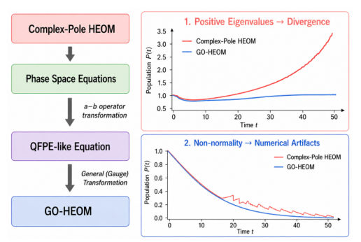
<figcaption class="paper-figure-caption"><b>Fig 1.</b> FIG. 1. Schematic derivation of the GO–HEOM and the two major instability mechanisms in complex-pole HEOM.</figcaption>
</figure>
<figure class="paper-figure-card">
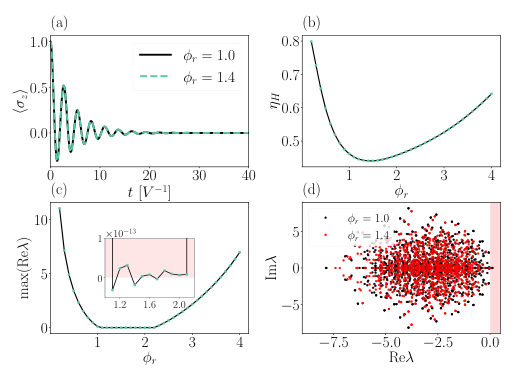
<figcaption class="paper-figure-caption"><b>Fig 2.</b> FIG. 2. (a) ⟨σz(t)⟩under an intermediate coupled BO spec- tral density (p0 = 1.0) for conventional complex pole HEOM (ϕr = 1.0) and GO–HEOM (ϕr = 1.4). In the strong-coupling regime of the BO spectral density (p0 = 3.0). (b) Henrici departure from normality as a function of the gauge-scaling parameter ϕr. (c) Maximum real part of the eigenvalue spec- trum as a function of ϕr. (d) Eigenspectra for ϕr = 1.0 and ϕr = 1.4.</figcaption>
</figure>
<figure class="paper-figure-card">

<figcaption class="paper-figure-caption"><b>Fig 3.</b> FIG. 3. ⟨σz(t)⟩with strong coupling to a BO (p0 = 10.0) obtained with conventional complex-pole HEOM (ϕr = 1.0) and gauge-transformed HEOM (ϕr = 2.1).</figcaption>
</figure>
<figure class="paper-figure-card">

<figcaption class="paper-figure-caption"><b>Fig 4.</b> FIG. 4. Spin-boson dynamics with a sub-Ohmic spectral den- sity at zero temperature. (a) ⟨σz(t)⟩as a function of cou- pling strength, α. (b) Error accretion in conventional HEOM (ϕr = 1.0) compared to our GO-HEOM (ϕr = 1.3) under strong coupling (α = 0.2).</figcaption>
</figure>
</div>

<p><strong>Summary.</strong> The paper reveals a hidden gauge freedom within the complex-pole HEOM used for open quantum systems. By optimizing this gauge parameter, they introduce GO-HEOM, a numerically stable variant of the simulation technique. This advancement allows researchers to accurately model dynamics in strongly coupled or highly non-Markovian environments previously unreachable by standard methods.</p>
<p><strong>Why it may be interesting.</strong> This work provides a powerful, general methodological tool (GO-HEOM) for simulating complex open quantum dynamics that was previously computationally inaccessible due to numerical instability, directly impacting research in quantum optics and molecular physics.</p>
<details>
<summary>Detailed structure</summary>
<p><strong>Main problem.</strong> The primary challenge addressed is the numerical instability inherent in complex-pole Hierarchical Equations of Motion (HEOM) when simulating open quantum systems.</p>
<p><strong>Main result.</strong> The authors discovered a continuous, previously unknown gauge freedom within the HEOM formulation, allowing for the development of GO-HEOM which stabilizes simulations in strongly coupled and highly non-Markovian regimes.</p>
<p><strong>Method.</strong> They derive this gauge freedom by reformulating the Liouvillian structure and optimizing a gauge parameter ($\phi$) to minimize numerical artifacts like spectral divergence and non-normal error amplification.</p>
<p><strong>Model / system.</strong> The work focuses on open quantum systems, using the spin-boson model as a primary benchmark. The dynamics are governed by the HEOM derived from the bath correlation function.</p>
<p><strong>Key observables.</strong> Population difference $\langle\sigma_z(t)
angle$, non-normality ($\eta_H$), and the eigenvalue spectrum of the hierarchy generator.</p>
<p><strong>Important parameters / regimes.</strong> Coupling strengths ($p_0$ or $\alpha$), spectral density type (e.g., sub-Ohmic $\alpha=0.2$ to $0.02$), and the gauge parameter ($\phi_r$).</p>
<p><strong>Assumptions / limitations.</strong> The gauge transformation is shown to be independent of the specific bath-correlation decomposition scheme, suggesting general applicability.</p>
<p><strong>Figures summary.</strong> Figures compare dynamics ($\langle\sigma_z(t)
angle$) across different gauge parameters ($\phi_r$), demonstrating that GO-HEOM stabilizes simulations where conventional HEOM diverges. Other figures illustrate spectral analysis and convergence checks.</p>
<p><strong>Paper structure.</strong> The paper first identifies the instability in standard complex-pole HEOM, then derives the continuous gauge freedom ($\phi$). It introduces GO-HEOM by optimizing $\phi$ to stabilize dynamics, demonstrating its success across various coupling regimes and finally relating the method to a generalized Quantum Fokker-Planck Equation.</p>
</details>
<details>
<summary>Abstract</summary>
<p>While complex-pole hierarchical equations of motion (HEOM) have dramatically expanded the reach of numerically exact quantum dynamics simulations of open quantum systems, they suffer from numerical instabilities rooted in the non-Hermitian structure of their Liouvillian. Yet, the origin of this structure remains obscure. Here, we report a previously unknown gauge freedom in complex-pole HEOM: a continuous family of analytically equivalent Liouvillians, all encoding the same bath correlation function, whose numerical properties vary dramatically. This gauge controls both the eigenspectrum and non-normality of the hierarchy generator, revealing spectral divergence and non-normal error amplification as two distinct instability mechanisms. By optimizing this gauge, we introduce GO--HEOM, which eliminates divergences in strongly coupled Brownian oscillator environments and extends numerically exact simulations of sub-Ohmic dynamics -- including through the delocalized-to-localized quantum phase transition -- to previously inaccessible coupling strengths. Because this gauge transformation is independent of the bath-correlation decomposition scheme, our GO--HEOM becomes a general, broadly compatible strategy for accessing numerically exact quantum dynamics of open quantum systems over arbitrary coupling and highly non-Markovian regimes.</p>
</details>
<p><sub><a href="#top">↑ back to top</a></sub></p>

<p><a id="paper-2607.03950"></a></p>
<h3 id="orthogonality-edges-in-strong-coupling-quantum-work-statistics"><a href="http://arxiv.org/abs/2607.03950v1">Orthogonality Edges in Strong-Coupling Quantum Work Statistics</a></h3>
<p><strong>Authors:</strong> Atta ur Rahman, Muhammad Noman, S. M. Zangi, Saeed Haddadi<br>
<strong>Type:</strong> theory · <strong>Category:</strong> statistical mechanics · <strong>PDF:</strong> <a href="https://arxiv.org/pdf/2607.03950v1">https://arxiv.org/pdf/2607.03950v1</a><br>
<strong>Analysis basis:</strong> full PDF text, analyzed in chunks
<strong>Topic relevance:</strong> 🔥 <code>non-equilibrium universality</code> <strong>4/5</strong> · <code>driven-dissipative phase transition</code> <strong>3/5</strong> · <code>methods for driven-dissipative</code> <strong>3/5</strong> · <code>non-equilibrium dynamics</code> <strong>3/5</strong> · <code>Kondo &amp; dissipative impurity</code> <strong>2/5</strong> · <code>Keldysh / 2PI / non-Gaussian methods</code> <strong>1/5</strong> · <code>correlated / nonlocal dissipation</code> <strong>1/5</strong></p>
<div class="figure-strip-hint">↔ Scroll figures horizontally</div>
<div class="paper-figures-scroll">
<figure class="paper-figure-card">

<figcaption class="paper-figure-caption"><b>Fig 1.</b> FIG. 1. Orthogonality edge and finite-energy crossover in quantum work statistics. (a) Running infrared exponent θeff = d ln Zel/d ln ωIR for the spectral density Js(ω) = αω1−s c ωse−ω/ωc. The color scale shows log10[θeff/(2α)], and the dashed vertical line marks the Ohmic boundary s = 1. The Ohmic bath is the marginal case between a finite elastic threshold line for s &gt; 1 and stronger infrared orthogonality for s &lt; 1. (b) Elastic threshold weight Zel as a function of the infrared cutoff ωIR/ωc. The super-Ohmic bath approaches a finite residue, the Ohmic bath shows algebraic extinction Zel ∝ω2α IR , and the sub-Ohmic bath is suppressed more rapidly. (c) Exact Ohmic continuum edge at the...</figcaption>
</figure>
<figure class="paper-figure-card">
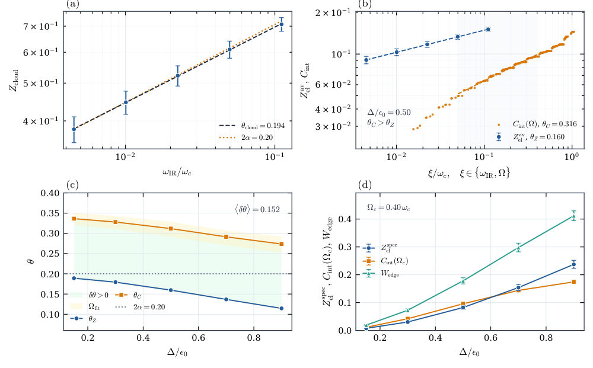
<figcaption class="paper-figure-caption"><b>Fig 2.</b> FIG. 2. Finite-tunnelling crossover and edge-window spectral accounting. (a) Static Ohmic cloud benchmark for the same logarithmic discretization convention used in the finite-tunnelling calculation. The fitted exponent θcloud agrees with the target value 2α, anchoring the finite-bath normalization to the independent-boson fixed point. (b) Representative finite- tunnelling extraction at ∆/ϵ0 = 0.50. The elastic threshold weight is fitted as Zav el ∼ωθZ IR after geometric averaging over shifted logarithmic meshes, while the continuum weight is fitted as Cint(Ω) ∼ΩθC after interleaving the shifted spectra. The common horizontal variable ξ denotes ωIR for Zav el and Ωfor Cint. (c) Effective...</figcaption>
</figure>
</div>

<p><strong>Summary.</strong> The paper analyzes how strong coupling modifies quantum work statistics using the spin-boson model. It distinguishes between idealized fixed points (independent bosons) and realistic finite-tunneling regimes. The key finding is that finite tunneling causes a measurable separation in scaling exponents ($   heta_C &gt;    heta_Z$), which serves as a robust diagnostic for identifying crossovers away from static boundary limits.</p>
<p><strong>Why it may be interesting.</strong> This work provides quantitative diagnostic tools for probing the nature of quantum phase transitions and boundary conditions in open quantum systems by analyzing non-equilibrium work statistics, highly relevant to quantum thermodynamics.</p>
<details>
<summary>Detailed structure</summary>
<p><strong>Main problem.</strong> The study investigates how strong coupling to an infrared singular reservoir alters quantum work statistics, potentially transforming a simple quasiparticle threshold line into a complex many-body edge.</p>
<p><strong>Main result.</strong> Finite tunneling effects cause a measurable separation ($  heta_C &gt;    heta_Z$) between the continuum exponent and the elastic overlap exponent, indicating a finite-energy crossover away from the static boundary fixed point.</p>
<p><strong>Method.</strong> The authors use exact diagonalization on logarithmically discretized baths in a displaced oscillator basis to calculate work distributions and extract scaling exponents via specialized averaging and interleaving techniques.</p>
<p><strong>Model / system.</strong> The system is modeled by the biased spin-boson model coupled to an Ohmic or super-Ohmic reservoir. The analysis focuses on the quantum work distribution $P(W)$ following a sudden bias inversion protocol.</p>
<p><strong>Key observables.</strong> Zero-temperature inclusive work distribution $P(W)$, elastic overlap weight ($Z_{el}$), continuum probability exponent ($  heta_C$), and elastic overlap exponent ($   heta_Z$).</p>
<p><strong>Important parameters / regimes.</strong> Reservoir spectral density exponent ($s$), infrared cutoff ($\omega_{IR}$), and the finite tunneling amplitude ($\Delta/\epsilon_0$).</p>
<p><strong>Assumptions / limitations.</strong> The analysis relies on mapping the bath to a logarithmic discretization, treating the separation $   heta_C &gt;    heta_Z$ as a crossover signature rather than an asymptotic fixed point.</p>
<p><strong>Figures summary.</strong> Figures illustrate the classification of work statistics based on reservoir type (independent-boson limit) and demonstrate the positive separation ($\delta	heta = 	heta_C - 	heta_Z > 0$) observed when finite tunneling is included, contrasting it with the zero separation at the static fixed point.</p>
<p><strong>Paper structure.</strong> The paper first establishes the independent-boson fixed-point behavior based on reservoir type ($s>1$ vs $s=1$). It then extends this to finite tunneling by developing specialized diagnostics ($ heta_C$ from interleaved spectra, $ heta_Z$ from averaged overlaps) which reveal a positive separation $\delta	heta > 0$, interpreting this as a crossover effect.</p>
</details>
<details>
<summary>Abstract</summary>
<p>Strong coupling to a reservoir can do more than shift, broaden, or dress the work peaks of a driven quantum system. When the reservoir is infrared singular, a sudden change of a local control parameter can alter the boundary condition seen by infinitely many low-energy modes, converting a quasiparticle-like threshold line into a many-body edge. We demonstrate this mechanism for the inclusive work distribution of the biased spin-boson model under a sudden bias inversion. In the independent-boson limit, the problem is exactly solvable and gives a sharp infrared classification: a super-Ohmic bath can retain a finite elastic threshold weight, whereas Ohmic and sub-Ohmic baths extinguish the elastic line through boundary orthogonality. At the Ohmic fixed point, the same exponent controls both the vanishing elastic residue and the low-work continuum. We then ask how this edge is resolved away from the static-boundary limit. Using displaced-basis exact diagonalization of logarithmically discretized baths, we find that finite tunnelling leaves an edge-like continuum over the accessible energy window, while separating two operational diagnostics of the threshold: the cumulative-continuum exponent extracted from $z$-interleaved spectra lies above the elastic-overlap exponent extracted from $z$-averaged overlaps, $θ_C>θ_Z$. We interpret this separation as a finite-energy crossover away from the static-boundary fixed point, not as evidence for a new asymptotic fixed point. The separation survives fitting-window variation, oscillator-cutoff checks, spectrum-size checks, and leave-one-$z$-out tests, while time-domain characteristic functions provide a compatible but non-decisive diagnostic. Finally, the same threshold edge controls the sampling cost of Jarzynski-type exponential averages, making rare low-work events increasingly important at low temperature.</p>
</details>
<p><sub><a href="#top">↑ back to top</a></sub></p>

<p><a id="paper-2607.04946"></a></p>
<h3 id="chirped-floquet-linear-drives-activate-forbidden-charge-to-spin-conversions-in-rashba-two-dimensional-electron-gases"><a href="http://arxiv.org/abs/2607.04946v1">Chirped Floquet linear drives activate forbidden charge-to-spin conversions in Rashba two-dimensional electron gases</a></h3>
<p><strong>Authors:</strong> Mohsen Yarmohammadi<br>
<strong>Type:</strong> theory · <strong>Category:</strong> other · <strong>PDF:</strong> <a href="https://arxiv.org/pdf/2607.04946v1">https://arxiv.org/pdf/2607.04946v1</a><br>
<strong>Analysis basis:</strong> full PDF text, analyzed in chunks
<strong>Topic relevance:</strong> 🔥 <code>non-equilibrium dynamics</code> <strong>4/5</strong> · <code>exotic spin models in light-matter</code> <strong>3/5</strong> · <code>spintronics-quantum-optics interface</code> <strong>3/5</strong> · <code>methods for driven-dissipative</code> <strong>2/5</strong> · <code>non-equilibrium universality</code> <strong>2/5</strong> · <code>Keldysh / 2PI / non-Gaussian methods</code> <strong>1/5</strong> · <code>driven-dissipative phase transition</code> <strong>1/5</strong></p>
<div class="figure-strip-hint">↔ Scroll figures horizontally</div>
<div class="paper-figures-scroll">
<figure class="paper-figure-card">
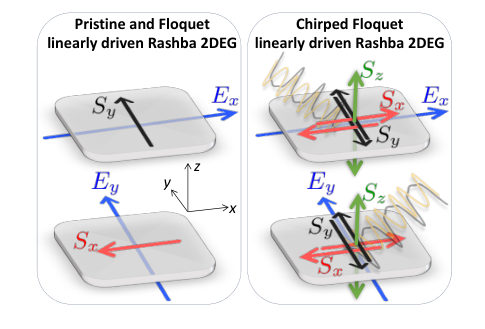
<figcaption class="paper-figure-caption"><b>Fig 1.</b> FIG. 1. Schematic of pristine and (chirped) Floquet linearly driven Rashba 2DEGs. In the pristine Rashba 2DEG or under linealry polarized Floquet light (left), continu- ous symmetries restrict the DC electric field (Ex, Ey)-induced spin Edelstein polarization Sx,y to be strictly orthogonal to the applied field. A chirped, linear drive (right), however, breaks the time-reversal and rotational symmetries of the sys- tem, which, in turn, lifts the native transport constraints, activating previously forbidden longitudinal and out-of-plane spin accumulations.</figcaption>
</figure>
<figure class="paper-figure-card">
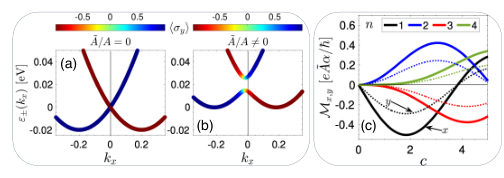
<figcaption class="paper-figure-caption"><b>Fig 2.</b> FIG. 2. Pristine and chirped Floquet quasi-energy bands, spin textures, and induced Floquet-Zeeman fields. (a, b) Pristine and chirped Floquet quasi-energy bands with transverse spin projection ⟨σy⟩(color scale) for the (a) pristine ( ˜A = 0) and (b) driven ( ˜A/A = 0.3) regimes, where the drive breaks time-reversal and rotational symme- tries to open an asymmetric gap at finite momentum (kx ̸= 0). (c) In-plane chirped Floquet-Zeeman fields Mx,y (in units of e ˜Aα/ℏ, where α is the Rashba coupling strength) as a func- tion of the phase chirp c, illustrating control over both field magnitude and sign.</figcaption>
</figure>
<figure class="paper-figure-card">
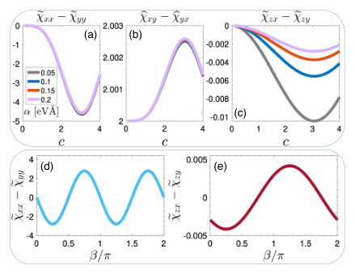
<figcaption class="paper-figure-caption"><b>Fig 3.</b> FIG. 4. Chirped Floquet-induced Edelstein suscepti- bilities as a function of Rashba coupling strength and polarization angle. (a–c) Evolution of the dynamically in- duced (a) longitudinal, (b) transverse, and (c) out-of-plane spin Edelstein susceptibilities versus the phase-chirp param- eter c for various RSOC strengths α ( ˜A/A = 1, n = 2, β = π/3). (d, e) Dependence of the induced (d) in-plane diag- onal and (e) out-of-plane susceptibilities on the polarization tilt angle β at c = 2 and n = 2, showing π-periodic and 2π- periodic behaviors, respectively. Parameters: ˜A/A = 0.3 and eA/ℏkF = 0.3.</figcaption>
</figure>
<figure class="paper-figure-card">
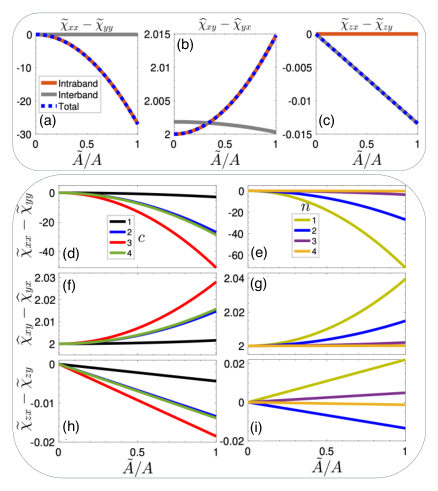
<figcaption class="paper-figure-caption"><b>Fig 4.</b> FIG. 3. Chirped Floquet-induced charge-to-spin con- version in Rashba 2DEGs. (a–c) Decomposition of the dynamically induced (a) longitudinal, (b) transverse, and (c) out-of-plane susceptibilities into intraband, interband, and to- tal contributions as a function of the drive amplitude ratio ˜A/A (c = 2, n = 2). The in-plane accumulations arise from intraband Fermi-surface displacements, whereas out-of-plane spin generation originates from interband quantum coherence. (d–i) Evolution of the induced total tensor components versus ˜A/A for (d, f, h) varying phase chirp c at fixed n = 2, and (e, g, i) varying harmonic orders n at fixed c = 2. Parameters: α = 0.1 eV Å, eA/ℏkF = 0.3, and β = π/3.</figcaption>
</figure>
</div>

<p><strong>Summary.</strong> The paper proposes using a chirped Floquet linear drive to overcome symmetry limitations that restrict spin-orbit coupling effects in Rashba 2DEGs. By inducing momentum drift and breaking time-reversal/rotational symmetries, this technique activates previously forbidden charge-to-spin conversion pathways. This offers an experimentally accessible route for advanced spintronic device control.</p>
<p><strong>Why it may be interesting.</strong> This work provides a clean theoretical mechanism—using tailored optical driving fields—to engineer specific symmetries in condensed matter systems, which is highly relevant for controlling quantum transport and spintronic phenomena.</p>
<details>
<summary>Detailed structure</summary>
<p><strong>Main problem.</strong> The research addresses how to activate forbidden charge-to-spin conversion pathways (Edelstein effect) in Rashba 2DEGs beyond the conventional transverse plane.</p>
<p><strong>Main result.</strong> A chirped Floquet linear drive successfully breaks necessary symmetries ($\mathcal{T}$ and $C_{2z}$), enabling deterministic, tunable control over longitudinal and out-of-plane spin accumulations.</p>
<p><strong>Method.</strong> The authors use Floquet theory to derive an effective Hamiltonian for the driven system, followed by calculating the spin Edelstein susceptibility tensor using the Kubo formula.</p>
<p><strong>Model / system.</strong> The physical system is a Rashba two-dimensional electron gas (2DEG). The dynamics are governed by analyzing the time evolution under a chirped Floquet linear drive potential, leading to an effective Hamiltonian structure $  ext{Heff}(\mathbf{k})$.</p>
<p><strong>Key observables.</strong> Spin Edelstein susceptibility tensor components ($\chi_{ij}$), spin polarization direction, and quasi-energy bands.</p>
<p><strong>Important parameters / regimes.</strong> Chirp parameter ($c$), harmonic order ($n$), Rashba coupling strength ($\alpha$), and external driving frequency ($\omega$).</p>
<p><strong>Assumptions / limitations.</strong> The analysis relies on a high-frequency Floquet expansion (valid for large $\omega$) and the use of the relaxation-time approximation for susceptibility calculations.</p>
<p><strong>Figures summary.</strong> Figures compare spin Edelstein polarization under pristine vs. chirped drives, show quasi-energy band gaps opening at finite momentum, and illustrate the dependence on chirp parameter $c$ and polarization angle $eta$.</p>
<p><strong>Paper structure.</strong> The paper first establishes the symmetry constraints in the pristine system; it then derives the effective Floquet Hamiltonian using time-averaging techniques involving Bessel functions; finally, it calculates the susceptibility tensor to demonstrate how symmetry breaking activates forbidden spin conversion channels.</p>
</details>
<details>
<summary>Abstract</summary>
<p>In Rashba two-dimensional electron gases (2DEGs), charge-to-spin conversion via the Edelstein effect is conventionally limited to the transverse plane. Accessing longitudinal or out-of-plane pathways typically requires static magnetic fields or interface engineering, which cause stray fields and lack tunability. While dynamic circular or elliptical Floquet drives can also unlock these forbidden pathways, a simple Floquet linear drive cannot. Here, we propose an alternative approach: a \textit{chirped} Floquet linear drive. The chirp induces in-plane Floquet-Zeeman fields and an odd-parity momentum drift, which simultaneously break rotational and time-reversal symmetries. This mechanism activates the forbidden Edelstein charge-to-spin conversions in Rashba 2DEGs. Experimentally accessible via programmable spatial light modulators or optical delay lines, this tunable chirped linear drive offers a broadly applicable route to spin-orbit torque switching and high-efficiency spintronics.</p>
</details>
<p><sub><a href="#top">↑ back to top</a></sub></p>

<p><a id="paper-2607.04065"></a></p>
<h3 id="the-normalised-wigner-negativity-rate-as-a-second-moment-probe-of-infall-in-adsmath304math"><a href="http://arxiv.org/abs/2607.04065v1">The Normalised Wigner Negativity Rate as a Second-Moment Probe of Infall in AdS$_3$</a></h3>
<p><strong>Authors:</strong> Ritam Basu<br>
<strong>Type:</strong> theory · <strong>Category:</strong> statistical mechanics · <strong>PDF:</strong> <a href="https://arxiv.org/pdf/2607.04065v1">https://arxiv.org/pdf/2607.04065v1</a><br>
<strong>Analysis basis:</strong> full PDF text, analyzed in chunks
<strong>Topic relevance:</strong> 🔥 <code>entanglement &amp; information structure</code> <strong>4/5</strong> · 🔥 <code>non-equilibrium dynamics</code> <strong>4/5</strong> · <code>non-equilibrium universality</code> <strong>3/5</strong> · <code>Keldysh / 2PI / non-Gaussian methods</code> <strong>1/5</strong> · <code>analog quantum simulation</code> <strong>1/5</strong> · <code>correlated / nonlocal dissipation</code> <strong>1/5</strong> · <code>driven-dissipative phase transition</code> <strong>1/5</strong> · <code>methods for driven-dissipative</code> <strong>1/5</strong></p>
<div class="figure-strip-hint">↔ Scroll figures horizontally</div>
<div class="paper-figures-scroll">
<figure class="paper-figure-card">
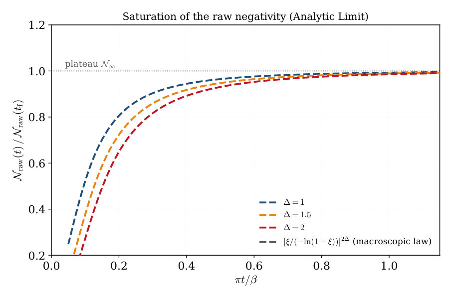
<figcaption class="paper-figure-caption"><b>Fig 1.</b> Figure 1. Saturation of the raw negativity (Analytic Limit). Time evolution of the macroscopic theoretical law [ξ/(−ln(1 −ξ))]2∆(dashed curves, eq. (4.12)) evaluated for ∆∈{1, 3/2, 2} with ε = 0.1 and β = 2π. The curves are normalized by their late-time saturation value, effectively setting the theoretical maximum to unity (dotted line). As t →∞(ξ →0), the geometric spreading mathematically cancels the return amplitude decay, causing the raw negativity to strictly saturate to the constant plateau N∞. This visualizes the asymptotic behavior described in Proposition 4.3 and demonstrates that the raw negativity is inherently bounded at late times, necessitating the seed-normalized diagnostic...</figcaption>
</figure>
<figure class="paper-figure-card">
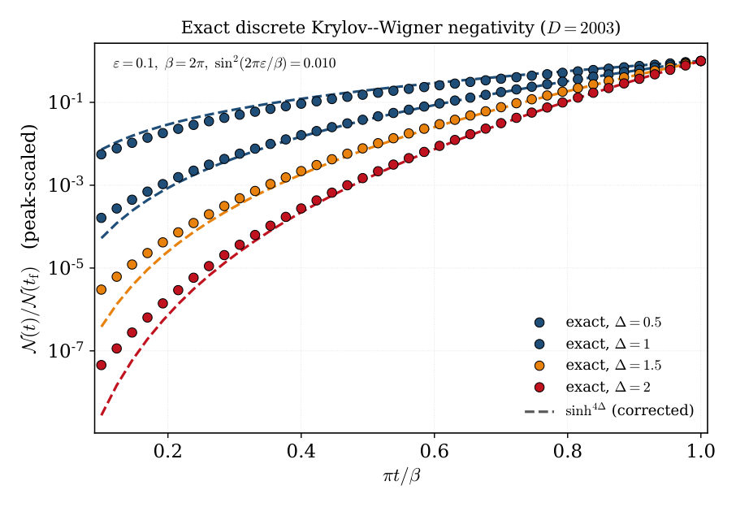
<figcaption class="paper-figure-caption"><b>Fig 2.</b> Figure 2. Growth of the seed-normalized negativity (log–log). The exact discrete seed- normalized negativity N = Nraw/P (markers), computed from the Wootters discrete Wigner function on the ZD ×ZD phase space of prime dimension D = 2003 (ε = 0.1, β = 2π), plotted against sinh(πt/β) on log–log axes and divided by its value at πt/β = 1 (common footing). On these axes the continuum law N ∼sinh4∆(4.10) is a straight line of slope 4∆(dashed); the exact markers follow it (fitted slopes 3.91, 5.79, 7.74 for ∆= 1, 3</figcaption>
</figure>
<figure class="paper-figure-card">
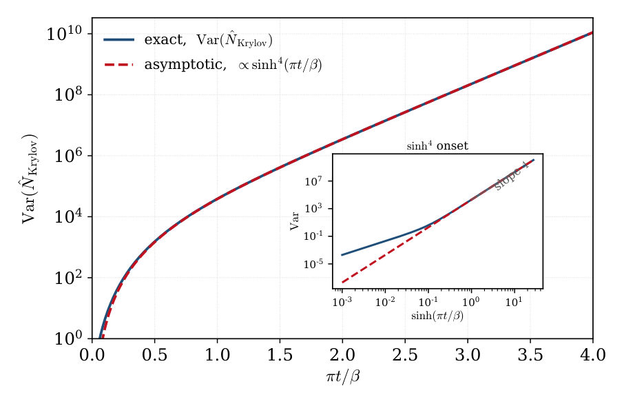
<figcaption class="paper-figure-caption"><b>Fig 3.</b> Figure 3. Exact growth of the Krylov wavepacket variance. Var( ˆNKrylov) versus πt/β from the negative-binomial formula (3.5) (solid) and its late-time sinh4 asymptotic (dashed), for sin2(2πε/β) = 0.01 at ∆= 1.</figcaption>
</figure>
<figure class="paper-figure-card">

<figcaption class="paper-figure-caption"><b>Fig 4.</b> Figure 4. Superposition of R(t) and d Var/dt at ∆= 1. (a) The normalized negativity rate R = ˙N and the exact Krylov variance rate d dtVar( ˆNKrylov), each rescaled to unit value at the right edge, versus πt/β (log scale), zoomed to the transient/onset region for sin2(2πε/β) = 0.01. The grey band marks the transient sinh2(πt/β) ≲ε0, i.e. πt/β ≲√ε0, where the two rates differ; they coincide thereafter. The curves are built from different closed forms—R from the macroscopic-exact negativity N ∝[ln  1 + ε0/ sinh2(πt/β)  ]−2∆and d dtVar from the exact rate (5.1)—so their agreement is not a tautology. (b) Relative deviation of the ratio R/ d</figcaption>
</figure>
<figure class="paper-figure-card">

<figcaption class="paper-figure-caption"><b>Fig 5.</b> Figure 5. Diagnostic of the matching condition, with the asymptotics shown explicitly. The ratio R(t)  d</figcaption>
</figure>
</div>

<p><strong>Summary.</strong> This theoretical paper proposes using the rate of normalized Krylov-Wigner negativity as a sophisticated probe to measure wavepacket spreading in holographic CFT models dual to AdS$_3$. By linking this second-moment observable to the growth rate of the Krylov variance, the authors identify a special condition ($\Delta=1$) where the rate directly measures the tidal stretching experienced by infalling geodesics.</p>
<p><strong>Why it may be interesting.</strong> The connection between quantum information measures (negativity) and geometric properties (tidal stretching rate) provides a powerful, non-standard diagnostic tool for understanding the emergence of classical spacetime from quantum field theory dynamics.</p>
<details>
<summary>Detailed structure</summary>
<p><strong>Main problem.</strong> The research aims to develop a diagnostic tool, based on the rate of normalized Krylov-Wigner negativity, that probes the second moment (spreading) of quantum wavepackets during time evolution in holographic CFT setups.</p>
<p><strong>Main result.</strong> The negative rate scales with the growth rate of the Krylov variance if and only if the system dimension $\Delta=1$, which corresponds to the special Breitenlohner-Freedman saturation dimension in AdS$_3$.</p>
<p><strong>Method.</strong> The analysis combines techniques from quantum information (Wigner negativity), random matrix theory (Krylov chain/Lanczos algorithm), and holographic duality (AdS geometry).</p>
<p><strong>Model / system.</strong> The system models the time evolution of a local operator quench in a 2D CFT, dual to an infalling particle dynamics in AdS$_3$. The dynamics are analyzed via the Krylov Hamiltonian structure realizing $\mathfrak{su}(1, 1)$ algebra.</p>
<p><strong>Key observables.</strong> Normalized Krylov-Wigner Negativity Rate, Spread Complexity (first moment), Krylov Variance, and the Bessel function form of the distribution.</p>
<p><strong>Important parameters / regimes.</strong> The dimension $\Delta$ (related to the Breitenlohner-Freedman dimension) and the time scale $t/eta$.</p>
<p><strong>Assumptions / limitations.</strong> A key conjecture relates the string-size operator ($\hat{N}_{	ext{str}}$) to the boundary Krylov number operator ($\hat{N}_{	ext{Krylov}}$), which is stated as a heuristic, not a proof.</p>
<p><strong>Figures summary.</strong> Not specified in the notes; the analysis relies on deriving closed forms for distributions (Negative Binomial) and asymptotic scaling laws involving $\sinh^4\Delta$.</p>
<p><strong>Paper structure.</strong> The paper progresses from defining first-moment probes (Spread Complexity) to introducing the second-moment probe (Negativity Rate). It establishes the mathematical framework using $\mathfrak{su}(1, 1)$ algebra and then connects this formalism to physical observables in AdS$_3$ via matching conditions derived from string theory fluctuations.</p>
</details>
<details>
<summary>Abstract</summary>
<p>In spread complexity, the average position of an operator along its Krylov chain, recovers the right radial momentum of an infalling particle in AdS, yet it is a measure of the first moment, irrespective of the spread of the wavepacket away from its classical trajectory. The rate of a normalized Krylov-Wigner negativity can be proposed as a diagnostic of the second moment of the boundary state that captures this spreading. Starting with the \emph{seed-normalized} Krylov-Wigner distribution -- that is, the Wigner transform of the descendant cloud, with the decaying return amplitude divided out -- we obtain an analytic Bessel form in the macroscopic limit and compute its total negativity explicitly. Retaining the Bessel variable all the way through, we find that the negativity goes as $\sinh^{4Δ}(πt/β)$, while the raw, seed-normalized state negativity saturates, as dictated by the $O(\sqrt{D})$ bound. Using the exact negative binomial statistics of the Krylov chain and the momentum dictionary of Caputa et al.~\cite{Caputa:2024}, the rate of the negativity scales as the growth rate of the Krylov variance at late time asymptotics \emph{if and only if} $Δ=1$, the Breitenlohner-Freedman saturating dimension in $AdS_3$. This dimensionality is special in that the negativity rate is the product of the proper radial position and momentum, $\mathcal{R} \propto \mathcal{C} P_ρ$, i.e., the rate of the tidal stretch of nearby geodesic falling into the horizon. We comment on the direction for future research, in particular the interpretation of the transverse string size operator in terms of the Krylov number operator through the common $SU(1,1)$ discrete series.</p>
</details>
<p><sub><a href="#top">↑ back to top</a></sub></p>

<p><a id="paper-2607.03867"></a></p>
<h3 id="the-reweighting-principle-in-statistical-mechanics"><a href="http://arxiv.org/abs/2607.03867v1">The Reweighting Principle in Statistical Mechanics</a></h3>
<p><strong>Authors:</strong> Salvatore Romano<br>
<strong>Type:</strong> theory · <strong>Category:</strong> statistical mechanics · <strong>PDF:</strong> <a href="https://arxiv.org/pdf/2607.03867v1">https://arxiv.org/pdf/2607.03867v1</a><br>
<strong>Analysis basis:</strong> full PDF text, analyzed in chunks
<strong>Topic relevance:</strong> 🔥 <code>entanglement &amp; information structure</code> <strong>4/5</strong> · <code>Keldysh / 2PI / non-Gaussian methods</code> <strong>3/5</strong> · <code>non-equilibrium dynamics</code> <strong>2/5</strong> · <code>non-equilibrium universality</code> <strong>2/5</strong> · <code>analog quantum simulation</code> <strong>1/5</strong> · <code>correlated / nonlocal dissipation</code> <strong>1/5</strong> · <code>correlated cavity matter</code> <strong>1/5</strong> · <code>driven-dissipative phase transition</code> <strong>1/5</strong> · <code>methods for driven-dissipative</code> <strong>1/5</strong></p>
<div class="figure-strip-hint">↔ Scroll figures horizontally</div>
<div class="paper-figures-scroll">
<figure class="paper-figure-card">
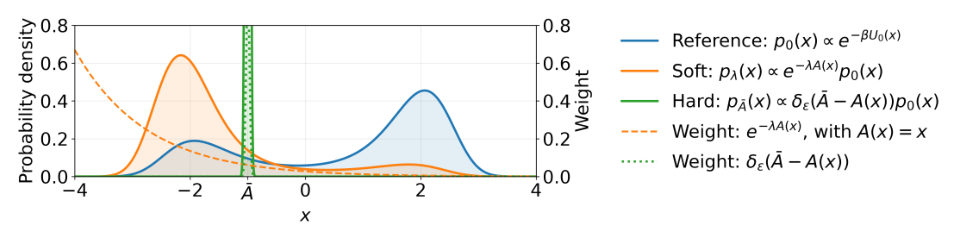
<figcaption class="paper-figure-caption"><b>Fig 1.</b> Figure 1: Schematic illustration of soft and hard reweighting. Exponential tilting (orange) modifies the reference ensemble (blue) smoothly through an exponential weight, while conditioning (green) selects a finite-resolution macrostate associated with a prescribed value of the observable. These two operations provide the probabilistic prototype for canonical and microcanonical constructions, respectively.</figcaption>
</figure>
</div>

<p><strong>Summary.</strong> The paper unifies statistical mechanics by showing that both soft constraints (exponential tilting, leading to the canonical ensemble) and hard constraints (conditioning, leading to the microcanonical ensemble) are mathematically equivalent formulations derived from minimizing relative entropy. By enlarging the state space, it provides a single information-theoretic lens through which equilibrium thermodynamics can be understood.</p>
<p><strong>Why it may be interesting.</strong> This work provides a deep information-theoretic underpinning for fundamental concepts like ensemble equivalence, which is crucial when modeling quantum systems where different approximations (e.g., mean-field vs. exact) might be used.</p>
<details>
<summary>Detailed structure</summary>
<p><strong>Main problem.</strong> To develop a unified probabilistic framework connecting conditioning, exponential tilting, and ensemble transformations within statistical mechanics.</p>
<p><strong>Main result.</strong> The paper shows that both canonical (soft constraint) and microcanonical (hard constraint) ensembles arise naturally as minimum relative entropy updates from a common structural prior. In the thermodynamic limit, these distinct descriptions become macroscopically equivalent.</p>
<p><strong>Method.</strong> It employs information theory, specifically minimizing the Kullback–Leibler divergence (relative entropy), applied to an enlarged probability space where observables are explicit variables.</p>
<p><strong>Model / system.</strong> The system is general statistical ensembles ($
ho$), modeled by constraining a reference measure $
ho_0$ via soft constraints (exponential tilting) or hard constraints (conditioning).</p>
<p><strong>Key observables.</strong> Gibbs entropy, Boltzmann entropy, Relative Entropy, Free-energy potential, and the observable $A(x)$.</p>
<p><strong>Important parameters / regimes.</strong> The tilting parameter ($\lambda$), the fixed constraint value ($ar{A}$), and the thermodynamic limit ($N 	o \infty$).</p>
<p><strong>Assumptions / limitations.</strong> Conditioning is treated as a formal limit rather than a standard measure change, and ensemble equivalence is established only in the macroscopic (thermodynamic) limit.</p>
<p><strong>Figures summary.</strong> Figure 1 schematically illustrates the smooth reshaping (orange) versus support restriction (green) of the reference ensemble; Table 1 summarizes soft vs. hard constraints and resulting ensembles.</p>
<p><strong>Paper structure.</strong> The paper builds from defining reweighting principles, deriving both exponential tilting (canonical/Gibbs structure) and conditioning (microcanonical/Boltzmann structure) via minimum relative entropy, unifying them through an enlarged space construction, and finally demonstrating their macroscopic equivalence in the thermodynamic limit.</p>
</details>
<details>
<summary>Abstract</summary>
<p>Reweighting of probability measures provides a unifying perspective on conditioning, exponential tilting, and, more generally, ensemble transformations in statistical mechanics. We show that exponential tilting and conditioning arise as the minimum-relative-entropy updates associated with soft and hard constraints, respectively. Their relative entropies naturally inherit complementary thermodynamic structures: exponential tilting gives rise to the Legendre structure of the canonical ensemble and reduces to the Gibbs entropy for a uniform reference measure, while conditioning reduces to the Boltzmann entropy through the surprisal of the constrained macrostate. By introducing an enlarged probability space in which observables are treated as explicit variables, we further show that microcanonical and canonical ensembles arise as conditional and marginal distributions of a common structural prior after exponential reweighting. In the thermodynamic limit, described through large deviation theory, conditioning emerges from exponential tilting by concentration of measure, revealing ensemble equivalence as a consequence of entropy--bias competition. Finally, we outline how the same information-theoretic framework naturally extends to path space, suggesting a unified probabilistic description of equilibrium thermodynamics and conditioned stochastic dynamics.</p>
</details>
<p><sub><a href="#top">↑ back to top</a></sub></p>

<p><a id="paper-2607.05173"></a></p>
<h3 id="semi-markovian-switching-in-a-fluctuating-harmonic-trap-an-age-structured-formulation"><a href="http://arxiv.org/abs/2607.05173v1">Semi-Markovian switching in a fluctuating harmonic trap: An age-structured formulation</a></h3>
<p><strong>Authors:</strong> Derek Frydel<br>
<strong>Type:</strong> theory · <strong>Category:</strong> statistical mechanics · <strong>PDF:</strong> <a href="https://arxiv.org/pdf/2607.05173v1">https://arxiv.org/pdf/2607.05173v1</a><br>
<strong>Analysis basis:</strong> full PDF text, analyzed in chunks
<strong>Topic relevance:</strong> 🔥 <code>non-equilibrium dynamics</code> <strong>4/5</strong> · <code>driven-dissipative phase transition</code> <strong>3/5</strong> · <code>methods for driven-dissipative</code> <strong>3/5</strong> · <code>non-equilibrium universality</code> <strong>2/5</strong> · <code>Frenkel-Kontorova</code> <strong>1/5</strong> · <code>Keldysh / 2PI / non-Gaussian methods</code> <strong>1/5</strong> · <code>correlated / nonlocal dissipation</code> <strong>1/5</strong></p>
<div class="figure-strip-hint">↔ Scroll figures horizontally</div>
<div class="paper-figures-scroll">
<figure class="paper-figure-card">
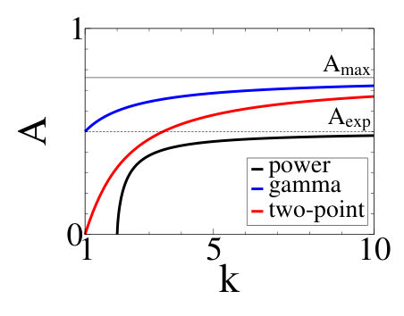
<figcaption class="paper-figure-caption"><b>Fig 1.</b> FIG. 1. Parameter A as a function of the shape parameter k for the Gamma, power-law, and intermittent two-point waiting-time distri- butions. The horizontal dashed lines correspond to the deterministic upper bound Amax = tanh(1) ≈0.7616 and the memoryless (expo- nential) value Aexp = 0.5. Parameters: τK1 = τK2 = τ1 = τ2 = 1.</figcaption>
</figure>
<figure class="paper-figure-card">
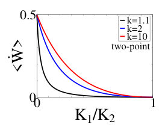
<figcaption class="paper-figure-caption"><b>Fig 2.</b> FIG. 2. Injected power ⟨˙W⟩as a function of K1 for the Gamma, power-law, and two-point waiting-time distributions. As K1 →0, all curves converge to the universal stochastic-resetting limit ⟨˙W⟩= DK τoff/(τoff +τon). Parameters: µK2 = τoff = τon = kBT = 1.</figcaption>
</figure>
<figure class="paper-figure-card">
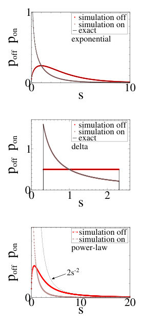
<figcaption class="paper-figure-caption"><b>Fig 3.</b> FIG. 3. Variance-space distributions pi(s) for exponential, de- terministic, and algebraic waiting-time distributions. Parameters: τK = τoff = τon = kBT = 1. For the algebraic case, we use roff from Eq. (42) with k = 3, corresponding to C = 2 and therefore poff(s) ∼2s−2.</figcaption>
</figure>
<figure class="paper-figure-card">

<figcaption class="paper-figure-caption"><b>Fig 4.</b> FIG. 4. Spatial distributions ni(x) shown on a log-log scale for algebraic waiting-time distributions corresponding to Eq. (42) with k = 3. Parameters: τK = τoff = τon = D = 1, for which noff(x) ∼ 2|x|−3 and non(x) ∼6|x|−5.</figcaption>
</figure>
</div>

<p><strong>Summary.</strong> This paper develops an advanced framework using age-structured and variance-space methods to study Brownian motion in a harmonic trap whose stiffness switches semi-Markovianly. It shows that while the average potential energy remains at equilibrium, the system's injected power and spatial fluctuations are acutely sensitive to the memory encoded in the switching waiting times. This provides powerful tools for analyzing non-equilibrium steady states driven by complex temporal correlations.</p>
<p><strong>Why it may be interesting.</strong> This work provides a rigorous theoretical tool (age-structured/variance-space formalism) to analyze non-equilibrium energy dissipation in systems driven by colored noise or switching potentials, which is highly relevant for understanding active matter or fluctuating quantum environments.</p>
<details>
<summary>Detailed structure</summary>
<p><strong>Main problem.</strong> The study investigates non-equilibrium dynamics of a Brownian particle whose confining harmonic trap stiffness switches stochastically between two values with arbitrary waiting-time statistics.</p>
<p><strong>Main result.</strong> The authors derive exact integral equations for the steady state, showing that while potential energy remains at equilibrium, injected power and spatial fluctuations are highly sensitive to the memory encoded in the switching statistics.</p>
<p><strong>Method.</strong> The problem is tackled first using an enlarged age-structured Fokker-Planck formulation to restore Markovianity, followed by a transformation into a deterministic evolution equation within variance space for the stochastic-resetting limit.</p>
<p><strong>Model / system.</strong> A single Brownian particle confined by a harmonic potential $u(x) = rac{1}{2}Kx^2$, where the stiffness $K$ switches between two values ($K_1, K_2$) according to arbitrary waiting-time statistics. The dynamics are analyzed in both position space and an enlarged age-structured state space.</p>
<p><strong>Key observables.</strong> Stationary moments ($\langle x^2 
angle$), injected power ($\langle \dot{W} 
angle$), average potential energy (PE), and the stationary spatial/variance distributions ($
ho(x)$, $   ext{poff}(s)$).</p>
<p><strong>Important parameters / regimes.</strong> The stiffness values ($K_1, K_2$), mean residence times ($ au_i$), and the nature of the waiting-time statistics (e.g., exponential vs. algebraic tails).</p>
<p><strong>Assumptions / limitations.</strong> The spatial dynamics between switches are assumed to remain locally Brownian; for steady state analysis, finite mean residence times ($  au_i &lt; \infty$) are required.</p>
<p><strong>Figures summary.</strong> Figures illustrate the variance distributions $\pi(s)$ for different switching protocols (e.g., exponential vs. deterministic) and show how confinement suppresses large-variance fluctuations relative to the released state.</p>
<p><strong>Paper structure.</strong> The paper first establishes the general age-structured framework for semi-Markovian dynamics, deriving steady-state integral equations for moments. It then analyzes the stochastic-resetting limit by transforming the problem into variance space, yielding simplified integral equations and asymptotic results based on waiting-time tail behavior.</p>
</details>
<details>
<summary>Abstract</summary>
<p>We study a Brownian particle in a harmonic trap whose stiffness switches between two values with arbitrary waiting-time statistics, generating semi-Markovian dynamics. To treat the resulting temporal memory, we formulate the problem in an enlarged age-structured state space, restoring Markovianity and yielding a local Fokker--Planck description. Within this framework, we derive exact steady-state integral equations for the spatial and birth distributions and obtain exact expressions for stationary moments, injected power, and potential energy. In the second part of the paper, we analyze the stochastic-resetting limit, corresponding to a particle alternately released and trapped. By representing the stationary spatial distribution as a superposition of Gaussian states with fluctuating variance, the problem can be reformulated as a switching process in variance space. This yields exact integral equations for the variance distributions and leads to a simplified description amenable to direct analytical treatment.</p>
</details>
<p><sub><a href="#top">↑ back to top</a></sub></p>
<hr>
<p>
<a href="index.html">← Index</a>
 · <a href="papers_01.html">← Previous</a> · <a href="papers_03.html">Next →</a>
</p>
<hr>

</body>
</html>
